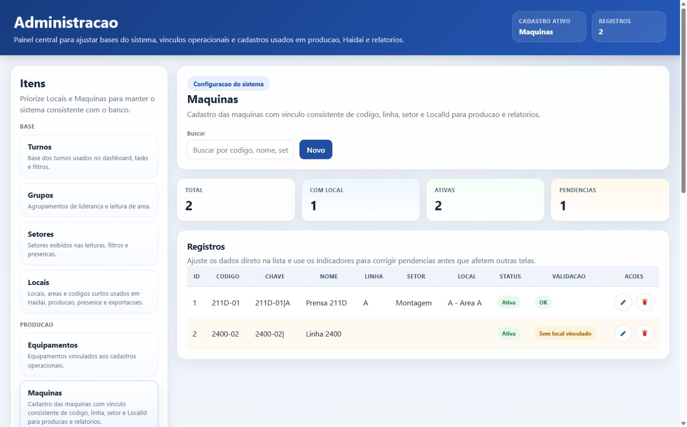
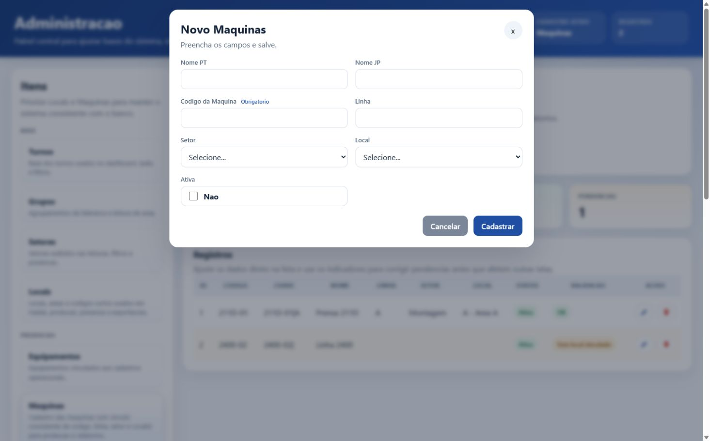
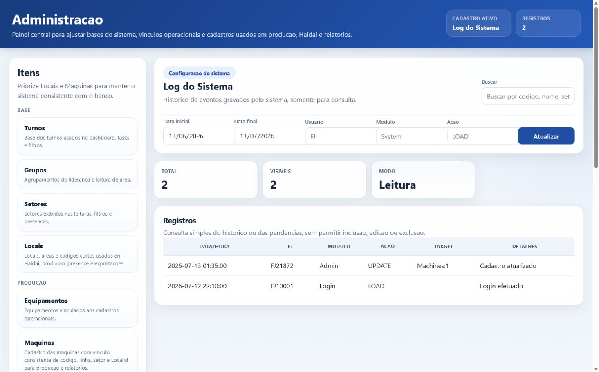

Consulta da documentacao
Use os atalhos acima ou clique nos blocos abaixo para abrir o conteudo diretamente nesta pagina. Os arquivos Markdown continuam existindo como fonte de edicao, mas a leitura principal fica concentrada aqui.
Documentacao completa
Esta secao replica o conteudo dos arquivos Markdown para consulta direta no HTML. Os arquivos .md continuam como fonte de edicao.
README da documentacao docs/README.md
TeamOps - Documentacao
Visao geral
TeamOps e um sistema interno para gestao operacional de fabrica. A solution combina WinForms, WebView2 e modulos HTML/CSS/JavaScript para apoiar rotinas de lideranca, acompanhamento de operadores, producao, registros operacionais e consultas.
Esta documentacao foi gerada por analise da solution. Quando uma regra de negocio nao esta explicitamente descrita no codigo, ela aparece marcada como comportamento inferido pelo codigo.
Objetivo do sistema
Centralizar informacoes operacionais usadas no ambiente industrial, reduzindo dependencias de controles dispersos e permitindo que lideres, operadores e administradores acompanhem dados de turno, operadores, maquinas, pendencias, comunicados e documentos operacionais.
Publico alvo
- Operadores de fabrica que consultam comunicados e informacoes do turno.
- Lideres de grupo e liderancas intermediarias que acompanham presenca, tarefas, follow-up, PR, CL e monitoramento.
- Administradores responsaveis por usuarios, acessos e cadastros.
- Equipe tecnica responsavel por publicacao, banco SQLite, pastas compartilhadas e suporte.
Principais modulos identificados
- Dashboard principal.
- Operadores e atribuicoes.
- Relatorios, incluindo relatorio gerencial de operadores e relatorio dedicado de presenca.
- Layout/presenca de operadores.
- Haidai, com exportacao HTML para TV ou monitor publico.
- Follow-up e relatorios de follow-up.
- Tarefas e relatorios de tarefas.
- Master Card e relatorios.
- Monitor de producao.
- Hikitsugui: criacao, leitura por lider e leitura por operador.
- Sobra de peca.
- PR e CL.
- Yukyu/paid leave tracking.
- Administracao e controle de acesso.
Guias operacionais especificos
docs/production-monitor-guide.md: uso do Monitor de Producao, comandos doProductionMonitorProbe.exe, validacao de banco, status por setor, EC2 Administrator, dashboard e orientacao para prints.docs/admin-panel.md: documentacao do painel Administracao, com botoes, cadastros, validacoes e prints.
Tecnologias utilizadas
- C# e .NET 9.
- WinForms.
- Microsoft Edge WebView2.
- Dapper.
- Microsoft.Data.Sqlite.
- SQLite.
- HTML/CSS/JavaScript nos modulos embarcados em WebView2.
- ClosedXML para rotinas com Excel.
- FluentValidation e BCrypt.Net-Next na camada Core.
Estrutura do projeto
TeamOps.UI: aplicacao principal WinForms e modulos HTML.TeamOps.OperatorApp: aplicacao separada para leitura de Hikitsugui por operador.TeamOps.Core: entidades, validadores e tipos comuns.TeamOps.Data: acesso a dados, repositorios, scripts SQL e migrations.TeamOps.Config: resolucao de caminhos, configuracao do banco e app settings.
Como executar
- Abrir
TeamOps.slnno Visual Studio 2022 ou superior. - Restaurar pacotes NuGet.
- Conferir os caminhos em
TeamOps.UI/App.configeTeamOps.OperatorApp/App.config. - Garantir acesso de leitura/escrita ao banco SQLite configurado em
DatabasePath. - Definir
TeamOps.UIcomo projeto de inicializacao para o sistema principal. - Executar em Debug ou publicar como self-contained para distribuicao.
O app inicializa a cultura pt-BR, cria/atualiza o banco na inicializacao e abre a tela de login. Apos login valido, o dashboard HTML e carregado dentro do WinForms via WebView2.
Versao HTML da documentacao
Alem dos arquivos Markdown, existe uma versao HTML em docs/index.html. Ela usa a logo TeamOps.UI/Logo.png por referencia relativa para apresentar a documentacao em formato mais visual.
Manutencao da documentacao
Toda nova documentacao criada dentro de docs/ deve ser integrada ao docs/index.html, com conteudo consultavel diretamente na pagina HTML. O arquivo Markdown continua como fonte de edicao, mas o usuario nao deve precisar abrir o .md para acessar as informacoes principais. Inclua tambem o link na lista de arquivos Markdown.
Manual do usuario docs/user-manual.md
Manual do usuario
Abrindo o sistema
- Abra o executavel do TeamOps.
- Aguarde a tela de login.
- Informe seu usuario/senha.
- Apos o login, o dashboard principal sera exibido.
Se o sistema nao abrir ou apresentar erro de banco/pasta, acione o suporte e informe a mensagem exibida.
Tela principal
A tela principal funciona como menu de acesso aos modulos. Os botoes disponiveis podem variar conforme seu nivel de acesso.
Informacoes exibidas no dashboard:
- Usuario logado.
- Operador associado.
- Turno.
- Data/hora.
- Indicadores resumidos, como tarefas abertas e Master Cards em andamento.
Modulos
Operadores
Consulta e manutencao de informacoes de operadores. Use para localizar dados basicos e apoiar rotinas de equipe.
Atribuicoes
Modulo administrativo para atribuir operadores a liderancas/grupos. Disponivel apenas para usuarios autorizados.
Relatorios
Consulta dados consolidados e registros operacionais. Requer perfil de lideranca.
No hub de relatorios, os principais atalhos sao:
- Operadores: relatorio gerencial por operador. Use para analisar presenca, producao, Master Card, follow-up e historico diario. O percentual de producao compara o tempo rodando das maquinas do local com o tempo programado para essas maquinas no periodo filtrado.
- Presenca: relatorio focado somente em comparecimento. Use para acompanhar dias escalados, presenca conforme, Yukyu, faltas, atrasos, saidas antecipadas e Todoke pendente. Possui filtros por periodo, turno, setor, grupo, status e busca por FJ/nome.
- Follow, Tasks e MasterCard: consultas especificas dos respectivos modulos.
Para usar o relatorio de presenca:
- Abra Relatorios no dashboard.
- Clique em Presenca.
- Selecione o periodo e, se necessario, filtre por turno, setor, grupo ou status.
- Use a busca para localizar um operador pelo codigo FJ ou nome.
- Confira os cards de resumo e a tabela de operadores.
Presenca e layout
Exibe e organiza a presenca de operadores por setor/turno. Pode usar arquivos CSV de agenda importados pelo sistema.
Haidai
Modulo para acompanhamento/exportacao de informacoes para visualizacao em monitor ou TV. Comportamento inferido pelo codigo: o HTML exportado e gravado em pasta configurada para consulta publica/local.
Follow-up
Registro e acompanhamento de ocorrencias, motivos, tipos, equipamentos e status de tratativa.
Tarefas
Controle de tarefas por turno, responsavel e status. O dashboard mostra a quantidade de tarefas abertas do turno atual.
Master Card
Modulo para acompanhamento de itens em andamento e em follow-up. O dashboard mostra contagens por status.
Monitor de producao
Importa e apresenta eventos de maquinas. Usa arquivos TXT/DAT e pode executar um BAT de sincronizacao antes da importacao.
Para detalhes de uso, validacao e comandos de suporte, consulte docs/production-monitor-guide.md.
Hikitsugui
Registro e leitura de passagem de informacao. Existem telas para criacao, leitura por lider e leitura por operador.
Sobra de peca
Registro e acompanhamento de sobras de peca. Requer perfil autorizado.
PR e CL
Geracao/controle de documentos PR e CL com uso de templates e pastas configuradas.
Yukyu/Paid leave
Acompanhamento de solicitacoes/controles relacionados a folga/licenca paga. Usa dados de operador, turno e motivos cadastrados.
Administracao
Modulo restrito para manter os cadastros base do sistema. Use para revisar turnos, grupos, setores, locais, maquinas, equipamentos, status de maquina, codigos visuais da producao, tempos de procedimento, categorias, motivos/tipos de follow, shain, pendencias de maquina e log do sistema.
Operacoes principais:
- Selecione um cadastro na lateral esquerda.
- Use Buscar para filtrar os registros carregados.
- Clique em Novo para cadastrar um item editavel.
- Use o icone de lapis para editar uma linha existente.
- Use o icone de lixeira para excluir uma linha, apos confirmar.
- Em telas somente leitura, como Pendencias de Maquina e Log do Sistema, os botoes de novo, editar e excluir ficam indisponiveis.
- No Log do Sistema, preencha os filtros de data, usuario, modulo ou acao e clique em Atualizar.
Para a documentacao completa do painel e dos botoes, consulte docs/admin-panel.md.
Controle de acesso
Modulo para usuarios, niveis de permissao e configuracoes de acesso. Uso restrito.
Operacoes comuns
- Entrar no sistema no inicio do turno.
- Conferir se seu nome, turno e setor estao corretos.
- Abrir o modulo necessario pelo dashboard.
- Registrar informacoes com atencao a data, turno, setor, operador e anexos.
- Salvar antes de fechar a tela.
- Em relatorios, usar filtros antes de imprimir/exportar.
- Em modulos de monitor, aguardar a conclusao da importacao antes de atualizar a visualizacao.
Boas praticas
- Nao abrir varias janelas do mesmo modulo sem necessidade.
- Evitar desligar o computador durante importacao ou salvamento.
- Confirmar se o drive/pasta de rede esta acessivel antes de iniciar o turno.
- Informar mensagens de erro completas ao suporte.
- Nao mover arquivos de templates, anexos, banco ou exportacoes sem alinhar com a equipe tecnica.
- Em monitores publicos, atualizar a tela quando houver suspeita de cache.
Mensagens importantes
- Acesso negado: seu usuario nao possui permissao para o modulo.
- Operador nao encontrado: o usuario logado nao esta associado a um operador valido.
- Turno nao encontrado: o cadastro do operador aponta para um turno inexistente ou inconsistente.
- Arquivo nao encontrado: uma pasta ou template configurado esta ausente ou inacessivel.
- Erro de banco: o SQLite pode estar indisponivel, bloqueado ou inacessivel pela rede.
Em caso de erro
- Anote a mensagem.
- Feche somente a tela com erro, se possivel.
- Verifique se a rede e as pastas compartilhadas estao acessiveis.
- Tente abrir novamente o modulo.
- Se persistir, acione o suporte com usuario, modulo, horario e acao realizada.
Referencia de modulos docs/module-reference.md
Referencia de modulos
Dashboard
- Finalidade: menu principal, indicadores resumidos e roteamento para modulos.
- Arquivos principais:
Forms/FormDashboardHtml.cs,ui/dashboard/*. - Dependencias: usuario logado, operador, turno, WebView2, repositorios.
- Inputs: usuario autenticado, operador associado, turno, locale e mensagens
open:*. - Outputs: abertura de forms HTML/WinForms, payload inicial para HTML e contadores resumidos.
- Aberturas diretas: Operadores, Atribuicoes, Relatorios, Presenca/Layout, Haidai, Follow-up, Tarefas, Master Card, Monitor de Producao, Hikitsugui Criacao, Hikitsugui Leitura Lider, Sobra de Peca, PR, CL, Yukyu/Paid Leave, Administracao e Controle de acesso.
- Riscos: usuario sem operador/turno impede abertura; WebView2 ausente gera tela branca.
Operadores
- Finalidade: consulta/manutencao de operadores.
- Arquivos principais:
HTMLFormOperators.cs,ui/operators/*,OperatorRepository.cs. - Dependencias: SQLite, tabela
Operators. - Inputs: dados cadastrais de operador.
- Outputs: lista/alteracoes de operadores.
- Riscos: inconsistencias em
CodigoFJafetam login, tarefas e escala.
Atribuicoes
- Finalidade: associar operadores a liderancas/grupos.
- Arquivos principais:
FormAssignments.cs,AssignmentRepository.cs,GroupLeaderRepository.cs. - Dependencias:
Assignments,GroupLeaders,Operators. - Inputs: operador, lider/grupo.
- Outputs: atribuicoes gravadas.
- Riscos: permissao administrativa exigida; atribuicoes incorretas afetam fluxo operacional.
Relatorios
- Finalidade: hub de acesso a consultas consolidadas e relatorios especificos.
- Arquivos principais:
HTMLFormReports.cs,ui/reports/*,ui/operator-manager-report/*,ui/presence-report/*,ui/production-management-report/*,ui/mastercard-report/*,ui/pr-cl-report/*,ui/sobra-de-peca-report/*, formsHTMLForm*Report.cse services correspondentes. - Dependencias: Hikitsugui, Follow-up, Tasks, operadores, presenca, producao, Master Card, PR/CL, Sobra de Peca, WebView2 e SQLite.
- Inputs: acao selecionada no hub e filtros de cada relatorio.
- Outputs: abertura de relatorios, visualizacao consolidada e possiveis exportacoes/impressao conforme tela.
- Atalhos do hub: Hikitsugui, Follow consolidado, Grafico Follow, Tasks, Operadores, Presenca, Gerencial de Producao, MasterCard, PR, CL e Sobra de Peca.
- Relatorio gerencial de operadores:
HTMLFormOperatorManagerReportconsolida presenca, producao, Master Card, follow-up e historico diario do operador selecionado. O percentual de producao usa minutos rodando divididos pelos minutos programados por maquina/local no periodo. - Relatorio de presenca:
HTMLFormPresenceReportconsulta escala e comparecimento, com filtros por periodo, turno, setor, grupo, status e busca por FJ/nome. Considera Haidai, registros de presenca, Yukyu/Todoke e movimentos para destacar presenca conforme, falta, Yukyu, atraso, saida antecipada e Todoke pendente. - Relatorio gerencial de producao: consolida producao, operadores, maquinas, setores, rankings, comparativo por turno/grupo, tendencia diaria, cruzamento de presenca e alertas.
- Relatorios PR/CL: filtram documentos por periodo, setor, categoria, prioridade e texto, com abertura do arquivo gerado.
- Relatorios MasterCard, Tasks e Sobra de Peca: listam registros, totais e detalhes/historico quando disponivel.
- Riscos: consultas grandes podem ficar lentas em banco de rede; percentuais dependem de escala/local, eventos de maquina, cadastros de maquinas e eventos de presenca cadastrados corretamente.
Presenca/Layout
- Finalidade: exibir presenca e posicoes de operadores por setor/turno, com suporte a layout visual.
- Arquivos principais:
HTMLFormPresenceLayout.cs,FormPresenceLayout.cs,ui/presence-layout/*,ui/presence/*. - Dependencias:
OperatorPresence,OperatorPositions,OperatorSchedule, CSVs de agenda. - Inputs: setor, turno, data, CSV de schedule e posicoes salvas.
- Outputs: layout visual, posicoes e status de presenca.
- Observacao:
ui/presence-layoute a tela moderna de layout;ui/presencee assets de presenca continuam no projeto e devem ser tratados como parte do dominio de presenca. - Riscos: CSV ausente ou fora do padrao deixa operadores fora do layout.
Haidai
- Finalidade: painel operacional com exportacao para monitor/TV.
- Arquivos principais:
HTMLFormHaidai.cs,HaidaiModuleService.cs,ui/haidai/*. - Dependencias: SQLite,
HaidaiExportDirectory. - Inputs: dados operacionais do modulo.
- Outputs: visualizacao e HTML exportado.
- Riscos: pasta de exportacao sem permissao impede atualizacao de monitor publico.
Follow-up
- Finalidade: registrar e acompanhar ocorrencias/pendencias.
- Arquivos principais:
HTMLFormFollowUp.cs,ui/follow-up/*,FollowUpRepository.cs, repositorios de motivos/tipos/equipamentos. - Dependencias:
FollowUps,FollowUpReasons,FollowUpTypes,Equipments,Locals. - Inputs: tipo, motivo, equipamento, descricao, responsavel/status.
- Outputs: registros e relatorios.
- Riscos: cadastros auxiliares incompletos reduzem qualidade do registro.
Relatorios de Follow-up
- Finalidade: analise por operador, consolidado, grafico ou item unico.
- Arquivos principais:
HTMLFormFollowReport.cs,HTMLFormFollowOperatorReport.cs,HTMLFormFollowSingleReport.cs,HTMLFormFollowChart.cs,ui/follow-report/*,ui/follow-operator-report/*,ui/follow-single-report/*,ui/follow-chart/*. - Dependencias: dados de follow-up e WebView2.
- Inputs: filtros e comandos de impressao/PDF.
- Outputs: relatorios e PDFs.
- Riscos: impressao/PDF depende do WebView2.
Tarefas
- Finalidade: controle de tarefas por turno/responsavel/status.
- Arquivos principais:
HTMLFormTasks.cs,HTMLFormTasksReport.cs,ui/tasks/*,ui/tasks-report/*. - Dependencias: tabelas
TaskseTaskStatusHistory. - Inputs: tarefa, responsavel, prazo, status.
- Outputs: tarefas, historico de status, relatorio com totais de abertas/concluidas/atrasadas e detalhe por tarefa.
- Riscos: status inconsistentes afetam contagem de tarefas abertas.
Master Card
- Finalidade: acompanhamento de itens em andamento/follow-up.
- Arquivos principais:
HTMLFormMasterCard.cs,HTMLFormMasterCardReport.cs,MasterCardModuleService.cs,ui/mastercard/*. - Dependencias: schema garantido pelo service e SQLite.
- Inputs: operador, treinador, setor, equipamento, descricao, datas, status e filtros de relatorio.
- Outputs: cards, historico, relatorio por periodo/status/setor/equipamento/operador/treinador e contagens no dashboard.
- Riscos: schema dinamico precisa ser garantido antes das consultas.
Monitor de producao
- Finalidade: importar eventos de maquinas e apresentar status atual/historico.
- Arquivos principais:
HTMLFormProductionMonitor.cs,ProductionFileImporter.cs,ProductionPlanDatImporter.cs,ProductionAnalyticsService.cs,ui/production-monitor/*. - Dependencias:
Machines,MachineEvents,MachineCurrentStatus,MachineStatuses, arquivos TXT/DAT, BAT, EC2 Administrator e configuracoes emApp.config. - Inputs: arquivos
yyMMdd_211D_E.txt,yyMMdd_2400_E.txt, DATs de plano. - Outputs: eventos importados, maquinas criadas, status atual, indicadores de kadouritsu, EC2, codigos parametrizados e previsao G-Bareru quando configurada.
- Probe: comandos documentados em
docs/production-monitor-guide.md. - Riscos: layout/encoding inesperado, timeout do BAT, rede lenta, status desconhecido sem classificacao setorial, config apontando para banco errado.
Relatorio gerencial de producao
- Finalidade: consolidar indicadores gerenciais de producao por periodo, setor, local, turno, grupo, operador, maquina, part code e lider.
- Arquivos principais:
HTMLFormProductionManagementReport.cs,ProductionManagementReportService.cs,ui/production-management-report/*. - Dependencias:
ProductionAnalyticsService,HaidaiAssignments,OperatorPresence,Operators,Shifts,Sectors,Groups,Locals,Machines,MachineEvents,Ec2MachineCurrentStateeSystemLog. - Inputs: periodo, setor, local, turno, grupo, comparativo grupo A/B, operador, maquina, part code, lider, somente ativos e somente com producao.
- Outputs: resumo de producao/meta/eficiencia, ranking de operadores/setores/grupos/maquinas, comparativo de turnos, comparativo de grupos, tendencia diaria, linhas de operador/maquina/setor, cruzamento de presenca, alertas e tempos de execucao.
- Riscos: consultas por muitos dias/turnos podem ficar pesadas; resultado depende da consistencia entre Haidai, presenca, maquinas e eventos importados.
ProductionMonitorProbe
- Finalidade: ferramenta de linha de comando para diagnostico, validacao, auditoria e manutencao do monitor de producao.
- Arquivos principais:
ProductionMonitorProbe/Program.cs,ProductionMonitorProbe/ProductionMonitorProbe.csproj,ProductionMonitorProbe/App.config,ProductionMonitorProbe/Comandos.txt. - Dependencias:
TeamOps.Config,TeamOps.Data,TeamOps.Core, banco SQLite e mesmos arquivos/configuracoes usados pelo monitor de producao. - Inputs: comandos CLI como
schema-check,schema-repair,db-index-check,production-diagnostics,production-audit,validate-reports,validate-yakin-production,validate-overtime-rules,validate-overtime-real,ec2-diagnostics,status-report,import,import-profile,machine-cleanup,machine-location-guardedashboard. - Outputs: diagnosticos no console, validacoes de schema, auditorias de producao/presenca/horas extras, relatorios CSV opcionais e importacoes quando comandos de alteracao sao usados.
- Riscos: comandos de diagnostico sao seguros, mas
import,import-profile,schema-repair,ec2-reset-latestemachine-cleanup --applypodem alterar dados; sempre conferirDatabasePathantes de executar.
Hikitsugui
- Finalidade: passagem de informacao, leitura, respostas, correcoes e anexos.
- Arquivos principais:
HTMLHikitsuguiCreate.cs,HTMLHikitsuguiLeaderRead.cs,HTMLFormHikitsuguiReader.cs,TeamOps.OperatorApp/Forms/HTMLHikitsuguiOperatorRead.cs,ui/hikitsugui-create/*,ui/hikitsugui-leader-read/*,ui/hikitsugui-reader/*,TeamOps.OperatorApp/ui/hikitsugui-operator-read/*. - Dependencias:
Hikitsugui,HikitsuguiResponses,HikitsuguiCorrections,HikitsuguiReads,HikitsuguiAttachments, pasta de anexos. - Inputs: registro, resposta, leitura, anexo.
- Outputs: comunicados e rastreabilidade de leitura.
- Riscos: pasta de anexos indisponivel; leituras podem nao ser registradas se houver erro de banco.
Sobra de peca
- Finalidade: registrar e acompanhar sobra de pecas.
- Arquivos principais:
HTMLFormSobraDePeca.cs,HTMLFormSobraDePecaReport.cs,ui/sobra-de-peca/*,ui/sobra-de-peca-report/*,SobraDePecaRepository.cs. - Dependencias: tabela
SobraDePeca, operador atual,Shifts,Machines,OperatorseShain. - Inputs: dados da sobra, lote, operador, maquina, item, peso, quantidade, shain, lider, observacao e filtros de relatorio.
- Outputs: registros consultaveis, relatorio por periodo/turno/maquina/item/busca, totais de quantidade, peso e itens distintos.
- Riscos: falta de padronizacao nos campos pode dificultar relatorio.
PR
- Finalidade: criar/controlar documentos PR.
- Arquivos principais:
HTMLFormPrCl.cs,HTMLFormPrClReport.cs,ui/pr-cl/*,ui/pr-cl-report/*,PRRepository.cs,PRCategoriaRepository.cs,PRPrioridadeRepository.cs,FormPR.cslegado. - Dependencias:
PR,PRCategorias,PRPrioridades, setores, operadores,PRTemplate,PRDirectory, ClosedXML. - Inputs: setor, categoria, prioridade, titulo e nome do arquivo.
- Outputs: registro no banco, arquivo Excel gerado a partir do template, aba de operadores preenchida e relatorio com filtros por periodo/setor/categoria/prioridade/busca.
- Riscos: template/pasta ausente.
CL
- Finalidade: criar/controlar documentos CL.
- Arquivos principais:
HTMLFormPrCl.cs,HTMLFormPrClReport.cs,ui/pr-cl/*,ui/pr-cl-report/*,CLRepository.cs,CLCategoriaRepository.cs,CLPrioridadeRepository.cs,FormCL.cslegado. - Dependencias:
CL,CLCategorias,CLPrioridades, setores, operadores,CLTemplate,CLDirectory, ClosedXML. - Inputs: setor, categoria, prioridade, titulo e nome do arquivo.
- Outputs: registro no banco, arquivo Excel gerado a partir do template, aba de operadores preenchida e relatorio com filtros por periodo/setor/categoria/prioridade/busca.
- Riscos: template/pasta ausente.
Yukyu/Paid Leave
- Finalidade: acompanhar folgas/licencas e conferencia.
- Arquivos principais:
FormPaidLeaveTracking.cs,ui/paidleave/*, SQL emSql/paidleave. - Dependencias:
AcompYukyu,YukyuConferencia,YukyuTodoke,YukyuFolhaControle,TodokeMotivo. - Inputs: operador, turno, motivos, conferencia.
- Outputs: acompanhamento e registros de controle.
- Riscos: dados de motivo/operador incompletos.
Administracao
- Finalidade: manter cadastros e consultas administrativas usados por producao, Haidai, presence, follow-up, relatorios e suporte.
- Arquivos principais:
HTMLFormAdmin.cs,ui/admin/*. - Dependencias: usuario administrador e SQLite.
- Inputs: cadastros base, maquinas, locais, status de maquina, codigos de producao, tempos de procedimento, motivos/tipos de follow, shain e filtros do log do sistema.
- Outputs: alteracoes administrativas, consultas de pendencias de maquina e consulta ao log do sistema.
- Riscos: alteracoes incorretas em locais, maquinas, status ou tempos de procedimento afetam producao, relatorios e indicadores. Acesso indevido pode afetar operacao geral.
- Guia detalhado:
docs/admin-panel.md.
Controle de acesso
- Finalidade: gerenciar usuarios e permissoes.
- Arquivos principais:
HTMLFormAccessControl.cs,FormAccessControl.cs,FormAddUser.cs,FormChangePassword.cs,ui/access-control/*,UserRepository.cs. - Dependencias:
Users, BCrypt, niveisAccessLevel. - Inputs: usuario, senha, nivel, CodigoFJ, troca de senha e comandos de ativacao/edicao conforme tela.
- Outputs: usuarios, permissoes, senhas protegidas por BCrypt e contadores de usuarios/admins.
- Riscos: usuario sem
CodigoFJvalido nao abre dashboard corretamente.
Aplicacao do operador
- Finalidade: leitura de Hikitsugui por operador em app separado.
- Arquivos principais:
TeamOps.OperatorApp/Program.cs,Forms/HTMLHikitsuguiOperatorRead.cs,ui/hikitsugui-operator-read/*. - Dependencias: WebView2, SQLite, anexos.
- Inputs: acao de leitura/resposta do operador.
- Outputs: registro de leitura e visualizacao de comunicados.
- Riscos: configuracao do
DatabasePathdeve apontar para o mesmo banco operacional.
Infraestrutura, configuracao e dados
- Finalidade: fornecer base compartilhada para configuracao, entidades, validacoes, banco, migrations, repositorios e services.
- Arquivos principais:
TeamOps.Config/*,TeamOps.Core/*,TeamOps.Data/*,TeamOps.UI/App.config,TeamOps.OperatorApp/App.config. - Dependencias: SQLite, Dapper, app settings, migrations SQL e caminhos configurados.
- Inputs:
DatabasePath, caminhos de templates/pastas, arquivos TXT/DAT/CSV, dados operacionais e comandos dos modulos. - Outputs: conexoes SQLite, schema atualizado, entidades, validacoes, repositorios e services usados pelas telas.
- Riscos: configuracao divergente entre UI, OperatorApp e Probe pode apontar para bancos diferentes; migrations incompletas ou app settings ausentes geram erro em tempo de execucao.
Painel Admin docs/admin-panel.md
Painel Admin
Visao geral
O painel Administracao centraliza cadastros e consultas tecnicas usados por producao, Haidai, presence, follow-up, relatorios e manutencao do proprio sistema. O acesso e restrito ao perfil administrativo pelo dashboard.
Arquivos principais:
TeamOps.UI/Forms/HTMLFormAdmin.cs: host WinForms/WebView2, definicao dos cadastros, consultas, validacoes e comandos de banco.TeamOps.UI/ui/admin/index.html: estrutura visual do painel.TeamOps.UI/ui/admin/app.js: renderizacao, busca, modal, filtros e mensagens para o WinForms.TeamOps.UI/ui/admin/style.css: layout e estilos.
Prints
Os prints abaixo foram capturados com a tela HTML real do modulo e dados simulados, sem gravar no banco operacional.



Estrutura da tela
O cabecalho mostra o nome do modulo, uma descricao curta, o cadastro ativo e a quantidade de registros carregados. A lateral esquerda lista os cadastros por grupos: Base, Producao, Follow, Pessoas e Outros. A area central mostra o cadastro selecionado, busca, acoes, indicadores e tabela.
Os indicadores mudam conforme o cadastro. Em geral mostram total, registros visiveis e modo editavel/leitura. Em Maquinas, mostram total, maquinas com local, maquinas ativas e pendencias. Em Locais, mostram total, locais com codigo, locais com maquinas e setores. Em Pendencias de Maquina, mostram total e tipos de inconsistencias encontradas.
Botao a botao
| Botao ou controle | Onde aparece | Funcionalidade |
|---|---|---|
| Cartoes da barra lateral | Lateral esquerda | Trocam o cadastro ativo. Ao clicar, a tela limpa os registros atuais, carrega o novo cadastro pelo WinForms e atualiza titulo, descricao, metricas, colunas e botoes. |
| Buscar | Barra superior do cadastro | Filtra localmente as linhas carregadas. A busca considera as colunas exibidas do cadastro ativo, como codigo, nome, setor, local e validacao. |
| Novo | Cadastros editaveis | Abre o modal de criacao do cadastro ativo. Fica oculto e desabilitado em telas somente leitura, como Pendencias de Maquina e Log do Sistema. |
| Editar | Coluna Acoes da tabela | Abre o modal preenchido com os dados da linha selecionada. Ao salvar, envia a acao update para o WinForms. |
| Excluir | Coluna Acoes da tabela | Exibe confirmacao e, se confirmada, envia a acao delete para o WinForms. Nao aparece em cadastros somente leitura. |
| X | Canto superior direito do modal | Fecha o modal sem salvar e limpa o estado de edicao. |
| Cancelar | Rodape do modal | Fecha o modal sem salvar e volta o estado para criacao. |
| Cadastrar | Rodape do modal em modo novo | Coleta os campos do modal e envia a acao save para o WinForms. |
| Salvar alteracoes | Rodape do modal em modo edicao | Coleta os campos do modal e envia a acao update com o id do registro em edicao. |
| Fundo escuro do modal | Atras do modal aberto | Fecha o modal sem salvar. |
| Data inicial | Log do Sistema | Define o inicio do periodo consultado no log. O padrao e hoje menos 30 dias. |
| Data final | Log do Sistema | Define o fim do periodo consultado no log. Se a data final for menor que a inicial, o backend inverte o periodo antes da consulta. |
| Usuario | Log do Sistema | Filtra SystemLog.UserFJ por trecho de FJ. |
| Modulo | Log do Sistema | Filtra SystemLog.Module por trecho do modulo. |
| Acao | Log do Sistema | Filtra SystemLog.Action por trecho da acao. |
| Atualizar | Log do Sistema | Recarrega o log usando os filtros de data, usuario, modulo e acao. |
Cadastros disponiveis
| Grupo | Cadastro | Modo | Finalidade | Campos principais |
|---|---|---|---|---|
| Base | Turnos | Editavel | Base dos turnos usados no dashboard, tasks e filtros. | Nome PT, Nome JP. |
| Base | Grupos | Editavel | Agrupamentos de lideranca e leitura de area. | Nome PT, Nome JP. |
| Base | Setores | Editavel | Setores exibidos nas leituras, filtros e presencas. | Nome PT, Nome JP. |
| Base | Locais | Editavel | Locais, areas e codigos curtos usados em Haidai, producao, presence e exportacoes. | Nome PT, Nome JP, Codigo Curto, Setor. |
| Producao | Equipamentos | Editavel | Equipamentos vinculados aos cadastros operacionais. | Nome PT, Nome JP. |
| Producao | Maquinas | Editavel | Cadastro das maquinas com codigo, linha, setor, LocalId e status ativo. | Nome PT, Nome JP, Codigo da Maquina, Linha, Setor, Local, Ativa. |
| Producao | Pendencias de Maquina | Somente leitura | Lista maquinas sem local, sem setor, com local inexistente ou com setor divergente. | Consulta. |
| Producao | Status de Maquina | Editavel | Status brutos importados dos arquivos de producao. Setor vazio funciona como fallback global. | Setor, Codigo, Visual, Regra eficiencia, Nome PT, Nome JP, Cor, Cor do Texto. |
| Producao | Codigos da Producao | Editavel | Legenda visual dos codigos destacados na tela de producao. | Codigo, Cor, Cor do Texto, Descricao, Ativo. |
| Producao | Tempos de Procedimento | Editavel | Tempos padrao usados na previsao de capacidade do G-Bareru. | Setor, Area opcional, Procedimento, Tempo padrao, Ativo. |
| Producao | Categorias | Editavel | Categorias usadas no Hikitsugui e em outros registros. | Nome PT, Nome JP. |
| Follow | Motivos Follow | Editavel | Motivos padrao para os acompanhamentos. | Nome PT, Nome JP. |
| Follow | Tipos Follow | Editavel | Tipos de acompanhamento para formularios de follow. | Nome PT, Nome JP. |
| Pessoas | Shain | Editavel | Base simples de nomes romanji e nihongo para referencias internas. | Nome Romanji, Nome Nihongo. |
| Outros | Log do Sistema | Somente leitura | Historico de eventos gravados pelo sistema. | Data/Hora, FJ, Modulo, Acao, Target, Detalhes. |
Detalhamento item por item
Turnos
Mantem a lista de turnos usada pelo dashboard, tarefas, filtros e outras telas que dependem de turno. Cada registro possui Nome PT e Nome JP. Permite criar, editar e excluir turnos. Alteracoes aqui podem afetar filtros e exibicoes que esperam o nome do turno cadastrado.
Grupos
Mantem agrupamentos de lideranca e leitura de area. Cada grupo possui Nome PT e Nome JP. Permite criar, editar e excluir grupos. E usado como base para organizacao operacional e pode impactar telas que agrupam operadores ou leituras por lideranca.
Setores
Mantem os setores exibidos em leituras, filtros, presenca, locais e maquinas. Cada setor possui Nome PT e Nome JP. Permite criar, editar e excluir setores. E um cadastro sensivel porque locais, maquinas, tempos de procedimento e filtros operacionais dependem dele.
Locais
Mantem locais, areas e codigos curtos usados em Haidai, producao, presence, exportacoes e vinculacao de maquinas. Campos: Nome PT, Nome JP, Codigo Curto e Setor. Permite criar, editar e excluir locais. A lista mostra tambem quantas maquinas ativas estao vinculadas a cada local.
Funcionalidades especificas:
- Ao digitar o nome PT em um novo local, o sistema sugere automaticamente o Codigo Curto enquanto o usuario ainda nao editou esse campo.
- O codigo curto e obrigatorio e nao pode se repetir dentro do mesmo setor.
- A metrica do cadastro mostra total de locais, locais com codigo, locais com maquinas e quantidade de setores usados.
Equipamentos
Mantem equipamentos vinculados a cadastros operacionais, principalmente rotinas que precisam selecionar um equipamento em registros internos. Cada equipamento possui Nome PT e Nome JP. Permite criar, editar e excluir equipamentos.
Maquinas
Mantem o cadastro das maquinas usadas pelo monitor de producao e relatorios. Campos: Nome PT, Nome JP, Codigo da Maquina, Linha, Setor, Local e Ativa. Permite criar, editar e excluir maquinas.
Funcionalidades especificas:
- O Codigo da Maquina e obrigatorio.
- Se Nome PT ou Nome JP ficarem vazios, o sistema usa o codigo da maquina como nome.
- A chave da maquina e formada por codigo + linha e nao pode duplicar outra maquina.
- Ao selecionar um Local, o sistema sincroniza automaticamente o Setor da maquina com o setor do local.
- A tabela destaca pendencias quando a maquina esta sem local, sem setor ou com setor diferente do setor do local.
- As metricas mostram total, maquinas com local, maquinas ativas e quantidade de pendencias.
Pendencias de Maquina
Consulta somente leitura para encontrar inconsistencias no cadastro de maquinas. Nao possui botao Novo, Editar ou Excluir. Mostra codigo da maquina, linha, setor da maquina, local e pendencia encontrada.
Tipos de pendencia exibidos:
- Maquina sem
LocalId. - Maquina sem
SectorId. - Local vinculado que nao existe mais.
SectorIdda maquina diferente do setor cadastrado no local.
Use esta tela como checklist antes de validar relatorios e indicadores de producao.
Status de Maquina
Mantem os status brutos importados dos arquivos de producao. Campos: Setor, Codigo, Visual, Regra eficiencia, Nome PT, Nome JP, Cor e Cor do Texto. Permite criar, editar e excluir status.
Funcionalidades especificas:
- Setor vazio significa status global/fallback.
- Codigo representa o status bruto vindo da origem de producao.
- Visual controla a classificacao visual exibida no sistema.
- Regra eficiencia controla como o status entra no calculo de eficiencia.
- Cores sao exibidas como amostras na tabela.
- Classificacoes aceitas:
Running,StopCounts,StopNoCounteError.
Codigos da Producao
Mantem a legenda visual dos codigos destacados na tela de producao. Campos: Codigo, Cor, Cor do Texto, Descricao e Ativo. Permite criar, editar e excluir codigos.
Funcionalidades especificas:
- O codigo e normalizado para maiusculo.
- Nao permite duplicidade do mesmo codigo.
- As cores devem estar em formato hexadecimal e sao exibidas como amostras na tabela.
- O campo Ativo permite manter o cadastro historico sem usar o codigo na exibicao operacional.
Tempos de Procedimento
Mantem tempos padrao usados na previsao de capacidade do G-Bareru. Campos: Setor, Area opcional, Procedimento, Tempo padrao (min) e Ativo. Permite criar, editar e excluir tempos.
Funcionalidades especificas:
- O tempo precisa ser maior que zero.
- O mesmo procedimento nao pode ser duplicado para o mesmo setor/area.
- Quando a area fica vazia, o registro funciona como padrao global do setor.
- Procedimentos aceitos pela validacao atual:
ECII,BUNKATSUeDCS. - A descricao da tela menciona
KYUKEIpara descanso padrao, mas a validacao atual do codigo nao aceita esse procedimento.
Categorias
Mantem categorias usadas no Hikitsugui e em outros registros. Cada categoria possui Nome PT e Nome JP. Permite criar, editar e excluir categorias. Alteracoes podem afetar padronizacao e filtros de registros que usam categoria.
Motivos Follow
Mantem os motivos padrao usados em registros de follow-up. Cada motivo possui Nome PT e Nome JP. Permite criar, editar e excluir motivos. E importante para padronizar analises e relatorios de follow-up.
Tipos Follow
Mantem os tipos de acompanhamento usados nos formularios de follow. Cada tipo possui Nome PT e Nome JP. Permite criar, editar e excluir tipos. Ajuda a separar naturezas diferentes de acompanhamento e melhora a qualidade dos filtros.
Shain
Mantem uma base simples de pessoas com Nome Romanji e Nome Nihongo para referencias internas. Permite criar, editar e excluir registros. E usado como cadastro auxiliar para exibicoes ou referencias que precisam dos dois formatos de nome.
Log do Sistema
Consulta somente leitura do historico gravado em SystemLog. Nao possui botao Novo, Editar ou Excluir. Mostra Data/Hora, FJ, Modulo, Acao, Target e Detalhes.
Funcionalidades especificas:
- O filtro inicial consulta os ultimos 30 dias.
- Data inicial e Data final definem o periodo consultado.
- Usuario filtra por trecho do FJ.
- Modulo filtra por trecho do modulo registrado.
- Acao filtra por trecho da acao registrada.
- Atualizar recarrega os dados pelo backend aplicando os filtros.
- A consulta limita o retorno a 1000 linhas quando filtros sao enviados pelo painel.
Regras e validacoes importantes
- Cadastros simples de nomes exigem Nome PT e Nome JP.
- Locais exigem nome nos dois idiomas, codigo curto e setor. O mesmo codigo curto nao pode ser repetido dentro do mesmo setor.
- Maquinas exigem codigo da maquina. Se os nomes estiverem vazios, o codigo e usado como nome. Ao selecionar um local, o setor da maquina e sincronizado com o setor do local. A chave da maquina e montada por codigo + linha e nao pode duplicar outro registro.
- Status de Maquina aceita apenas classificacoes de eficiencia
Running,StopCounts,StopNoCountouError. O visual deve ser um dos codigos 0, 1, 3 ou 4. - Codigos da Producao normaliza o codigo para maiusculo, valida duplicidade e normaliza cores em hexadecimal.
- Tempos de Procedimento exige setor, procedimento valido e tempo maior que zero. Procedimentos aceitos:
ECII,BUNKATSU,DCS. O codigoKYUKEIe citado na descricao da tela para sobrescrever descanso padrao, mas a validacao atual do codigo aceita apenas os tres procedimentos acima. - Pendencias de Maquina e Log do Sistema nao permitem inclusao, edicao ou exclusao.
Observacoes tecnicas
- A tela usa
window.chrome.webview.postMessagepara enviar acoes ao WinForms:load,load_entity,save,updateedelete. - O WinForms responde com mensagens
init,entity_rows,saved,updated,deletedouerror. - A tabela
SystemLoge garantida porSystemLogRepository.EnsureSchema. - O schema administrativo garante migrations de producao e adiciona
Locals.ShortCodese a coluna ainda nao existir. - O locale padrao e
pt-BR; quandoProgram.CurrentLocaleeja-JP, rotulos e colunas usam os textos japoneses definidos no modulo.
Guia do monitor de producao docs/production-monitor-guide.md
Production Monitor e ProductionMonitorProbe
Objetivo
Este documento orienta o uso do Monitor de Producao no TeamOps e dos comandos do ProductionMonitorProbe.exe.
Use o Probe para validacao tecnica, diagnostico de banco, conferencia de importacao, status por setor, EC2 Administrator e performance. O usuario final normalmente usa apenas a tela Producao dentro do dashboard do TeamOps.
Onde executar o Probe
No ambiente publicado, abra PowerShell ou Prompt de Comando na pasta onde esta o executavel:
cd C:\caminho\do\publish\ProductionMonitorProbe
.\ProductionMonitorProbe.exe schema-checkO banco usado pelo Probe vem do arquivo .config publicado, pela chave:
<add key="DatabasePath" value="C:\TeamOps\DB\teamops.db" />Em producao, confirme que o .config do Probe aponta para o mesmo banco usado pelo TeamOps.
Comandos do ProductionMonitorProbe
| Comando | Exemplo | O que faz | Quando usar |
|---|---|---|---|
import | .\ProductionMonitorProbe.exe import | Executa a importacao de producao usando as configuracoes atuais. Mostra arquivos lidos, linhas importadas/ignoradas, maquinas criadas, resultado do BAT, resultado EC2 e tempos de performance. | Validar se a importacao roda fora da tela principal. |
import-profile | .\ProductionMonitorProbe.exe import-profile --date 2026-06-01 --sector dad | Executa importacao normal e, se houver --date, mede tambem analytics pos-importacao para a data/setor informado. Use --reimport para limpar e reprocessar a data informada. | Investigar lentidao, travamento ou divergencia depois de importar. |
dashboard | .\ProductionMonitorProbe.exe dashboard | Monta dashboards de exemplo pelo backend e imprime kadouritsu, maquinas, areas e ranking. | Conferir se o backend do dashboard consegue calcular dados sem abrir a UI. |
db-index-check | .\ProductionMonitorProbe.exe db-index-check | Lista os indices existentes e marca indices obrigatorios como OK ou MISSING. | Validar performance e migrations em producao/homologacao. |
schema-check | .\ProductionMonitorProbe.exe schema-check | Valida schema do monitor de producao, integridade SQLite, tabelas, colunas, indices e seeds principais. Nao altera dados. | Primeiro comando para checar banco em producao. |
schema-repair | .\ProductionMonitorProbe.exe schema-repair | Executa o migrator e repara seeds de status de producao/DAD. Depois roda a mesma validacao do schema-check. | Corrigir banco com migration/seeds faltando, com suporte tecnico acompanhando. |
status-hardening | .\ProductionMonitorProbe.exe status-hardening | Valida regra defensiva de status por setor, fallback global, seeds DAD e formula de StopNoCount. | Antes de publicar ou depois de reparar schema. |
status-report | .\ProductionMonitorProbe.exe status-report --start 2026-06-01 --end 2026-06-02 --sector dad --csv dad-status.csv | Gera relatorio de status encontrados em MachineEvents, com classificacao, fonte, fallback, minutos, impacto estimado e warnings. Pode exportar CSV. | Validar codigos reais do DAD/G-Bareru sem alterar classificacao automaticamente. |
production-diagnostics | .\ProductionMonitorProbe.exe production-diagnostics | Mostra contagens de eventos, status, maquinas ativas, primeira/ultima data e distribuicoes principais. | Confirmar se a importacao gravou dados e se o dashboard tem base para exibir. |
machine-cleanup | .\ProductionMonitorProbe.exe machine-cleanup | Lista maquinas ativas com codigo invalido, como valores numericos/decimais inseridos por importacao incorreta. Nao altera dados sem --apply. | Limpar seletores de maquina sem apagar historico ligado por FK. |
ec2-diagnostics | .\ProductionMonitorProbe.exe ec2-diagnostics | Mostra ultima importacao EC2, arquivo/hash, maquinas atuais, rodando/paradas/desconsideradas, media, linhas auditadas e estilos de codigo de peca. | Conferir EC2 Administrator e cards EC2 do dashboard. |
ec2-reset-latest | .\ProductionMonitorProbe.exe ec2-reset-latest | Remove a ultima importacao EC2 do arquivo configurado e seus snapshots. | Uso restrito de suporte para forcar reimportacao do mesmo arquivo EC2. |
demo ou sem comando | .\ProductionMonitorProbe.exe | Executa import e depois dashboard. | Teste rapido em ambiente de desenvolvimento. |
Parametros aceitos
import-profile
.\ProductionMonitorProbe.exe import-profile --date 2026-06-01 --sector dad--date yyyy-MM-dd: data usada para medir analytics depois da importacao.--sector dad: filtra o analytics para DAD.--sector gbareruou--sector g-bareru: filtra para G-Bareru.--sector 1,--sector 2: aceita tambem o Id numerico do setor.--reimport: opcional e destrutivo para o recorte informado; exige--date, limpa eventos/status do filtro e procura arquivosYYMMDD_211D_E.txteYYMMDD_2400_E.txt.
Exemplo de reprocessamento controlado por data:
.\ProductionMonitorProbe.exe import-profile --date 2026-04-29 --sector dad --reimportstatus-report
.\ProductionMonitorProbe.exe status-report --start 2026-06-01 --end 2026-06-02 --sector dad --csv dad-status.csv--start yyyy-MM-ddouyyyy-MM-dd HH:mm:ss: inicio do periodo.--end yyyy-MM-ddouyyyy-MM-dd HH:mm:ss: fim do periodo. O fim e exclusivo.--sector dad,gbareru,g-bareruou Id numerico.--csv caminho.csv: grava o relatorio em CSV alem de mostrar no console.
Ordem recomendada para validar producao
- Fechar telas do TeamOps que estejam importando ou atualizando producao.
- Rodar:
.\ProductionMonitorProbe.exe schema-check- Se aparecer issue de schema/seeds, rodar com suporte:
.\ProductionMonitorProbe.exe schema-repair
.\ProductionMonitorProbe.exe schema-check- Validar indices:
.\ProductionMonitorProbe.exe db-index-check- Conferir dados importados:
.\ProductionMonitorProbe.exe production-diagnostics- Conferir se ha maquinas invalidas contaminando seletores:
.\ProductionMonitorProbe.exe machine-cleanupSe a lista estiver correta, aplicar:
.\ProductionMonitorProbe.exe machine-cleanup --apply- Validar status reais do DAD:
.\ProductionMonitorProbe.exe status-report --start 2026-06-01 --end 2026-06-02 --sector dad --csv dad-status.csv- Se usa EC2 Administrator:
.\ProductionMonitorProbe.exe ec2-diagnostics- Medir importacao e analytics:
.\ProductionMonitorProbe.exe import-profile --date 2026-06-01 --sector dadManutencao segura para dados antigos de producao
Dados antigos nao conformes podem deixar a tela Producao mais pesada e tambem poluir seletores, listas de maquinas e diagnosticos. Exemplos comuns:
- maquinas criadas por parser antigo com codigo invalido, como data no lugar da maquina;
- estados EC2 antigos marcados como
NOT_PRESENT_IN_LATEST_ADMINISTRATOR_SNAPSHOT; - eventos duplicados de testes antigos ou importacoes feitas com arquivo errado;
- status com texto quebrado por encoding antigo.
O procedimento recomendado para producao e sempre executar primeiro em modo diagnostico, revisar a saida e aplicar limpeza apenas quando o dry-run mostrar somente itens seguros.
Script pronto para producao
O publish do ProductionMonitorProbe inclui o script:
.\RunProductionMaintenance.ps1Por padrao, ele nao altera dados. Ele faz:
- identifica o banco pelo
.configdo probe; - cria backup do arquivo
.dbna pasta de saida; - roda
schema-check; - roda
db-index-check; - roda
production-diagnosticsantes da limpeza; - roda
machine-cleanupem modo dry-run; - grava todas as saidas em arquivos
.out.txte.err.txt.
Exemplo seguro para primeira execucao:
cd C:\caminho\do\publish\ProductionMonitorProbe
.\RunProductionMaintenance.ps1Depois de revisar 04-machine-cleanup-dry-run.out.txt, se a lista tiver apenas maquinas invalidas confirmadas, aplique:
.\RunProductionMaintenance.ps1 -ApplyCleanupTambem e possivel informar o banco e a pasta de saida manualmente:
.\RunProductionMaintenance.ps1 -DatabasePath C:\TeamOps\DB\teamops.db -OutputDirectory C:\TeamOps\Maintenance\production-20260604O que o machine-cleanup --apply faz
O comando nao apaga historico de producao. Ele inativa maquinas ativas com codigo claramente invalido, por exemplo registros criados por importacao incorreta onde o codigo da maquina virou uma data ou numero quebrado.
Use o modo apply somente depois de confirmar o dry-run:
.\ProductionMonitorProbe.exe machine-cleanup
.\ProductionMonitorProbe.exe machine-cleanup --applyChecklist antes de aplicar em producao
- Confirmar que
ProductionMonitorProbe.dll.configaponta para o mesmoDatabasePathusado pela UI. - Fechar a tela Producao e evitar importacao simultanea.
- Executar
.\RunProductionMaintenance.ps1sem-ApplyCleanup. - Conferir se o backup
.dbfoi criado. - Revisar
schema-check,db-index-checkeproduction-diagnostics. - Revisar cada linha em
04-machine-cleanup-dry-run.out.txt. - Aplicar apenas se todos os itens listados forem realmente invalidos.
- Abrir o Production Monitor e validar filtros, troca de dia, lista de maquinas e importacao.
Quando nao aplicar
Nao rode com -ApplyCleanup se:
- aparecer maquina real na lista do dry-run;
- o backup nao foi criado;
- o
.configestiver apontando para banco errado; - houver importacao em andamento;
- o arquivo
.dbestiver em rede instavel ou sem permissao de escrita.
Sobre .wal e .shm
O TeamOps configura SQLite com journal_mode=DELETE, para evitar arquivos persistentes .wal e .shm. Se algum .wal ou .shm aparecer, nao apague com o sistema aberto. Primeiro feche UI/probe/importacoes, confirme que nao ha processo usando o banco e entao investigue a configuracao do executavel que criou esses arquivos.
Como interpretar warnings do status-report
| Warning | Significado | Acao recomendada |
|---|---|---|
UNKNOWN_DAD_STATUS | O DAD teve codigo fora da lista esperada 0, 1, 3, 4, 17, 18, 19. | Conferir com amostra real antes de cadastrar regra nova. |
FALLBACK_USED_FOR_DAD | Nao encontrou status setorial DAD e usou status global. | Cadastrar status setorial se o significado do DAD for diferente. |
AUTO_CREATED_STATUS | Status parece ter sido criado automaticamente ou manualmente fora do seed esperado. | Conferir classificacao no Admin/banco. |
POSSIBLE_EFFICIENCY_IMPACT | Status nao rodando esta entrando no denominador do kadouritsu. | Validar se deve ser StopCounts ou StopNoCount. |
Uso da tela Producao
Abra pelo dashboard:
- Login no TeamOps.
- Clique em Producao.
- Escolha data, turno, setor, area ou maquina quando necessario.
- Use Importar producao para buscar arquivos TXT/DAT e EC2 configurados.
- Aguarde a mensagem de conclusao.
- O dashboard recarrega depois do commit da importacao.
Principais blocos da tela:
- Resumo de producao: kadouritsu real, rodando, paradas, erros e tempos.
- Filtros: data, turno, setor, area/local e maquina.
- Importacao: botao de importacao e mensagem de sucesso/erro.
- EC2 Administrator: total de maquinas, rodando, paradas, desconsideradas e media de tempo operando.
- Codigos parametrizados: legenda visual de codigos de peca, como
RJ2A7. - Previsao G-Bareru: simulacao de capacidade/kadouritsu prevista quando tempos
ECII,BUNKATSU,DCSe Haidai estao disponiveis. - Legenda de status: cores e classificacoes dos status de maquina.
- Detalhes por maquina/area: lista operacional usada para investigar divergencias.
Modulos relacionados no dashboard
| Grupo | Botao | Uso principal |
|---|---|---|
| Operacao | Operadores | Cadastro e consulta de operadores. |
| Operacao | Acompanhamento | Follow-up, registro e orientacao. |
| Operacao | Tasks | Planejamento e acompanhamento de tarefas do turno. |
| Operacao | MasterCard | Treinamento, follow e fechamento. |
| Operacao | Producao | Monitor de maquinas, importacao, EC2 e kadouritsu. |
| Operacao | Sobra de Peca | Lancamento de perdas/sobras. |
| Operacao | Relatorios | Hub de relatorios e impressoes. |
| Hikitsugui e Documentos | Hikitsugui | Cadastro rapido de passagem de informacao. |
| Hikitsugui e Documentos | Leitura Hikitsugui | Consulta, leitura, resposta e correcao. |
| Hikitsugui e Documentos | PR | Documento de processo. |
| Hikitsugui e Documentos | CL | Controle de linha. |
| Hikitsugui e Documentos | Todoke | Solicitacoes e folhas relacionadas a Yukyu/Todoke. |
| Presenca | Presenca | Painel dos setores e presenca operacional. |
| Presenca | Haidai | Escala diaria por grupo, usada tambem na previsao G-Bareru. |
| Administracao | Admin | Parametrizacoes do sistema, incluindo status/producao/codigos. |
| Administracao | Acesso | Usuarios e permissoes. |
Modulos do hub Relatorios
| Botao | Uso principal |
|---|---|
| Hikitsugui | Relatorio/consulta de passagem de informacao. |
| Follow-up | Relatorio consolidado de follow-up. |
| Graficos de Follow-up | Analise grafica de follow-up. |
| Tasks | Relatorio de tarefas. |
| Operadores | Relatorio gerencial por operador. |
| Presenca | Relatorio de presenca, ausencias, Yukyu e ocorrencias. |
| MasterCard | Relatorio de Master Card. |
| PR | Relatorio de PR. |
| CL | Relatorio de CL. |
Parametrizacoes importantes no Admin
Na tela Admin, confira as parametrizacoes ligadas a producao:
- Status de Maquina: status global e status por setor, com
Classification. - Codigos da Producao: legenda visual para codigos destacados, como
RJ2A7. - Tempos de Procedimento: tempos
ECII,BUNKATSUeDCSusados na previsao G-Bareru. - Setores, Locais e Maquinas: cadastros base usados por importacao e dashboard.
Prints das telas
E possivel colocar prints na documentacao. Como as telas recebem dados reais pelo WinForms/WebView2, os prints mais confiaveis devem ser capturados com o TeamOps aberto e logado no ambiente correto.
Sugestao de arquivos:
| Tela | Caminho sugerido |
|---|---|
| Dashboard principal | docs/screenshots/dashboard.png |
| Hub de relatorios | docs/screenshots/reports.png |
| Monitor de producao | docs/screenshots/production-monitor.png |
| Admin - parametrizacoes de producao | docs/screenshots/admin-production.png |
| ProductionMonitorProbe no console | docs/screenshots/production-monitor-probe.png |
Depois de salvar os prints nesses caminhos, eles podem ser referenciados no Markdown assim:
No momento, esta documentacao deixa a estrutura pronta para os prints reais, mas nao inclui imagem gerada automaticamente porque a renderizacao estatica fora do TeamOps nao carrega os dados do WebView2.
Cuidados operacionais
- Nao apague arquivos
.wal,.shmou.journalcom o sistema aberto. - Evite rodar importacao pelo Probe ao mesmo tempo que a tela Producao importa.
- Em banco de rede, rode diagnosticos em horario controlado quando possivel.
- Use
schema-repaireec2-reset-latestapenas com suporte tecnico. - Nao altere
Classificationde status desconhecido sem relatorio real e aprovacao do responsavel do setor.
Arquitetura docs/architecture.md
Arquitetura
Visao geral
TeamOps segue uma separacao em camadas simples:
flowchart TD
UI[TeamOps.UI WinForms] --> Core[TeamOps.Core]
UI --> Data[TeamOps.Data]
UI --> Config[TeamOps.Config]
OperatorApp[TeamOps.OperatorApp] --> Core
OperatorApp --> Data
OperatorApp --> Config
Data --> SQLite[(SQLite)]
Data --> Config
UI --> WebView[WebView2]
WebView --> HTML[HTML/CSS/JS]
HTML --> Bridge[chrome.webview.postMessage]
Bridge --> UIProjetos da solution
TeamOps.UI
Aplicacao principal. Contem o dashboard WinForms/WebView2, forms tradicionais e modulos HTML em TeamOps.UI/ui.
Responsabilidades:
- Login e abertura do dashboard.
- Controle de acesso por nivel.
- Hospedagem dos modulos HTML via WebView2.
- Integracao com repositorios e servicos.
- Importacao/exportacao de arquivos operacionais.
- Abertura de formularios de operacao, relatorio e administracao.
TeamOps.OperatorApp
Aplicacao WinForms separada para leitura de Hikitsugui por operador. Usa WebView2, os mesmos projetos Core/Data/Config e o caminho HikitsuguiAttachmentPath.
TeamOps.Core
Camada de dominio. Contem entidades como Operator, User, Shift, FollowUp, Hikitsugui, PR, CL, MachineEvent, OperatorPresence, Task e validadores.
TeamOps.Data
Camada de persistencia. Contem:
SqliteConnectionFactory.DbInitializereDbSeeder.ProductionSchemaMigrator.- Repositorios por agregado/tabela.
- SQL externo em
Sql/Hikitsugui,Sql/paidleaveeSql/presence. - Migrations em
Migrations/InitialSchema.sqleMigrations/ProductionMonitor_Upgrade.sql.
TeamOps.Config
Centraliza resolucao de caminhos. AppPaths.GetDatabasePath busca DatabasePath no App.config; se ausente, usa %LOCALAPPDATA%\TeamOps\TeamOps\teamops.db ou uma pasta data no modo portable.
Inicializacao
sequenceDiagram
participant App as Program.Main
participant Config as DbSettings/AppPaths
participant Init as DbInitializer
participant DB as SQLite
participant Login as FormLogin
participant Dash as FormDashboardHtml
App->>Config: resolve DatabasePath
App->>Init: EnsureCreated()
Init->>DB: aplica schema/migrations
App->>DB: SeedDefaultAdmin()
App->>Login: ShowDialog()
Login-->>App: usuario autenticado
App->>Dash: abre dashboard principalConfiguracao e caminhos
O TeamOps.UI/App.config define, por padrao:
DatabasePath:C:\TeamOps\DB\teamops.dbPRDirectory:C:\TeamOps\PR\PRTemplate:C:\TeamOps\Modelos\ModeloPR.xlsxCLDirectory:C:\TeamOps\CL\CLTemplate:C:\TeamOps\Modelos\ModeloCL.xlsxHikitsuguiAttachmentPath:C:\TeamOps\Anexo\Hikitsugui\OperatorScheduleDirectory:C:\TeamOps\Schedule\HaidaiExportDirectory:C:\TeamOps\Haidai\ProductionEventsDirectory:C:\TeamOps\Production\Events\ProductionSourceEventsDirectory:C:\TeamOps\Production\Source\Events\ProductionSourceDatDirectory:C:\TeamOps\Production\Source\Dat\ProductionImportBatchPath:C:\TeamOps\Production\import-production.batProductionImportCompletionFile:C:\TeamOps\Production\import.doneProductionImportTimeoutSeconds:180
Em producao, esses caminhos podem apontar para compartilhamentos de rede ou drives mapeados. Isso torna rede, permissao e disponibilidade de pasta dependencias criticas.
WebView2 e modulos HTML
Os forms HTML chamam EnsureCoreWebView2Async, configuram SetVirtualHostNameToFolderMapping("app", ...) e navegam para https://app/index.html. Os arquivos HTML sao copiados para o output via TeamOps.UI.csproj.
Fluxo padrao:
sequenceDiagram
participant JS as Modulo HTML/JS
participant WV as WebView2
participant Form as Form C#
participant Repo as Repository/Service
participant DB as SQLite
JS->>WV: window.chrome.webview.postMessage(payload)
WV->>Form: WebMessageReceived
Form->>Repo: consulta/acao
Repo->>DB: SQL/Dapper/Sqlite
DB-->>Repo: resultado
Repo-->>Form: dados
Form->>WV: PostWebMessageAsJson(payload)
WV-->>JS: chrome.webview messageForms e modulos HTML
Modulos HTML principais identificados:
ui/dashboardui/access-controlui/adminui/follow-chartui/follow-upui/follow-operator-reportui/follow-reportui/follow-single-reportui/hikitsugui-createui/hikitsugui-leader-readui/hikitsugui-readerui/mastercardui/mastercard-reportui/haidaiui/operatorsui/operator-manager-reportui/production-monitorui/paidleaveui/reportsui/presenceui/presence-layoutui/sobra-de-pecaui/tasksui/tasks-report
O dashboard abre os modulos por mensagens open:*, por exemplo open:operadores, open:relatorios, open:presence, open:haidai, open:followup, open:tasks, open:mastercard, open:production, open:hikitsugui, open:hikitsugui_read, open:sobradepeca, open:pr, open:cl, open:yukyu, open:admin e open:accesscontrol.
Controle de acesso
O dashboard consulta o usuario logado e compara AccessLevel antes de abrir modulos sensiveis. O acesso a atribuicoes, administracao e controle de acesso exige nivel administrativo. Relatorios, presenca, Haidai, tarefas e producao exigem nivel de lideranca. Follow-up, Master Card, Hikitsugui, Sobra de Peca, PR e CL exigem nivel KL ou superior.
Banco de dados
O banco usa SQLite com connection string:
Data Source=<DatabasePath>;Cache=Shared;Mode=ReadWriteCreateO schema inclui tabelas para operadores, turnos, grupos, setores, usuarios, locais, follow-up, Hikitsugui, anexos, PR, CL, maquinas, eventos de maquina, paid leave, presenca, agenda de operadores, logs, tarefas e historico de tarefas.
Repositorios usam SqliteConnectionFactory e Dapper ou comandos Microsoft.Data.Sqlite.
Migrations e schema
InitialSchema.sql cria as tabelas base. ProductionMonitor_Upgrade.sql adiciona campos e tabelas do monitor de producao. ProductionSchemaMigrator.Ensure tambem protege a evolucao do schema do monitor quando a importacao/consulta de producao roda.
Dependencias externas
- Microsoft Edge WebView2 Runtime.
- Acesso ao caminho do banco SQLite.
- Pastas configuradas em
App.config. - Templates Excel para PR/CL.
- Arquivos CSV de agenda de operadores.
- Arquivos TXT e DAT de producao.
- BAT de importacao de producao, quando configurado.
- Permissoes de leitura/escrita nas pastas operacionais.
Publicacao e deploy docs/deployment.md
Deployment
Pre-requisitos
- Windows com suporte a .NET 9 desktop.
- Microsoft Edge WebView2 Runtime instalado.
- Acesso ao caminho configurado do SQLite.
- Permissao de leitura e escrita nas pastas operacionais.
- Templates Excel necessarios para PR/CL.
- Compartilhamentos de rede estaveis, quando usados.
Projetos publicaveis
TeamOps.UI: aplicacao principal.TeamOps.OperatorApp: app especifico para leitura de Hikitsugui por operador.
Ambos usam net9.0-windows, WinForms e dependem de TeamOps.Core, TeamOps.Data e TeamOps.Config.
Publicacao self-contained
O projeto foi desenhado para deploy simples. A publicacao self-contained reduz necessidade de instalar SDK/runtime .NET na estacao, mas o WebView2 Runtime ainda deve estar presente ou ser distribuido pela politica interna de TI.
Pontos de atencao:
- Publicar todos os arquivos do output, incluindo
ui,Assets,App.confige DLLs. - Validar que os arquivos HTML/JS/CSS foram copiados.
- Manter icones e logos no output.
- Publicar
TeamOps.OperatorAppseparadamente quando usado em estacoes de operador.
Estrutura esperada de pastas
Configuracao padrao em TeamOps.UI/App.config:
C:\TeamOps\
DB\teamops.db
PR\
CL\
Modelos\ModeloPR.xlsx
Modelos\ModeloCL.xlsx
Anexo\Hikitsugui\
Schedule\
Haidai\
Production\
Events\
Source\Events\
Source\Dat\
import-production.bat
import.doneEsses caminhos podem ser adaptados para compartilhamento de rede. Se usar drive mapeado, garantir que o mapeamento exista no contexto do usuario que executa o app.
Banco SQLite
DatabasePath define onde o SQLite sera aberto. A connection string usa Cache=Shared e Mode=ReadWriteCreate, portanto o app pode criar o arquivo se ele nao existir e houver permissao.
Recomendacoes:
- Usar pasta com backup regular.
- Evitar armazenamento em rede instavel.
- Garantir permissao de escrita no arquivo e na pasta.
- Evitar multiplas copias divergentes do banco.
- Definir rotina de restauracao em caso de corrupcao.
WebView2
Todos os modulos HTML dependem do Edge WebView2 Runtime. Sem ele, telas podem ficar brancas ou falhar ao abrir.
Validacao pos-deploy:
- Abrir dashboard.
- Abrir um modulo HTML simples.
- Abrir um modulo com ida/volta de dados, como operadores ou tarefas.
- Verificar se nao ha tela branca.
Permissoes
Conceder aos usuarios/grupos:
- Leitura no diretorio da aplicacao.
- Leitura/escrita no banco SQLite.
- Leitura/escrita em anexos, PR, CL, Schedule, Haidai e Production, conforme uso.
- Execucao do BAT de importacao de producao quando configurado.
Dependencias externas por modulo
- PR/CL: templates Excel e pastas de saida.
- Hikitsugui: pasta de anexos.
- Presenca: arquivos CSV em
OperatorScheduleDirectory. - Haidai: pasta de exportacao HTML.
- Producao: pastas de eventos, DAT, BAT e arquivo de conclusao.
- WebView: runtime WebView2 e arquivos
ui.
Checklist de deploy
- Build Release concluido.
- Pasta publicada copiada integralmente.
App.configrevisado para ambiente alvo.DatabasePathacessivel.- WebView2 instalado.
- Templates PR/CL presentes.
- Pastas de anexos/exportacao/importacao presentes.
- Teste de login realizado.
- Teste de abertura dos modulos principais realizado.
- Backup inicial do banco configurado.
Troubleshooting docs/troubleshooting.md
Troubleshooting
Este guia foca problemas plausiveis em ambiente industrial, especialmente quando o banco SQLite e pastas operacionais dependem de rede, compartilhamentos ou drives mapeados.
Sistema nao abre
PROBLEMA: o TeamOps nao inicia ou fecha antes do login.
SINTOMA: erro ao abrir executavel, tela nao aparece, mensagem de banco/caminho/permissao.
CAUSA PROVAVEL: drive de rede nao montado, DatabasePath inacessivel, SQLite indisponivel, permissao insuficiente, antivirus bloqueando arquivos, deploy incompleto ou arquivo de configuracao incorreto.
COMO RESOLVER:
- Verificar se
C:\TeamOps\DB\teamops.dbou o caminho configurado existe. - Confirmar permissao de leitura e escrita na pasta do banco.
- Testar acesso ao compartilhamento de rede pelo Windows Explorer.
- Reiniciar o app apos reconectar o drive/rede.
- Conferir se todos os arquivos publicados estao na pasta do executavel.
- Verificar quarentena/bloqueio do antivirus.
COMO PREVENIR: usar caminho UNC estavel quando possivel, validar permissoes por grupo, monitorar disponibilidade do compartilhamento e manter pacote de deploy completo.
Tela branca no WebView
PROBLEMA: um modulo abre em branco.
SINTOMA: janela aparece sem conteudo, sem botoes ou com carregamento infinito.
CAUSA PROVAVEL: Edge WebView2 Runtime ausente/corrompido, arquivo HTML nao copiado para o output, falha de JavaScript, pasta ui/<modulo> ausente, cache do WebView corrompido.
COMO RESOLVER:
- Instalar ou reparar Microsoft Edge WebView2 Runtime.
- Conferir se
ui/<modulo>/index.html,app.jsestyle.cssexistem na pasta publicada. - Reabrir o sistema.
- Se ocorrer em apenas um computador, limpar cache/local data do WebView2 ou reinstalar o runtime.
- Se ocorrer apos deploy, publicar novamente garantindo
CopyToOutputDirectory.
COMO PREVENIR: incluir WebView2 nos pre-requisitos de estacao, testar cada modulo apos publicacao e evitar copiar parcialmente a pasta do sistema.
Erro de banco SQLite
PROBLEMA: falha ao consultar ou salvar dados.
SINTOMA: mensagens de lock, database is locked, disk I/O error, unable to open database file ou database disk image is malformed.
CAUSA PROVAVEL: arquivo SQLite em uso por multiplos processos, perda de conexao de rede, permissao insuficiente, arquivo corrompido, antivirus inspecionando o DB ou pasta temporariamente indisponivel.
COMO RESOLVER:
- Verificar conectividade com a pasta do banco.
- Fechar instancias extras do TeamOps na mesma estacao.
- Confirmar permissao de escrita no arquivo e na pasta.
- Reiniciar a estacao se houver processo travado.
- Se houver suspeita de corrupcao, parar o uso e restaurar backup.
- Solicitar analise tecnica antes de copiar/substituir o DB em producao.
COMO PREVENIR: manter backup regular, evitar banco em links de rede instaveis, excluir a pasta do DB de varreduras agressivas quando politica permitir e limitar acessos simultaneos desnecessarios.
Performance ruim
PROBLEMA: sistema lento ao abrir telas, salvar ou carregar relatorios.
SINTOMA: janelas demoram, importacao demora, WebView responde lentamente.
CAUSA PROVAVEL: rede lenta, banco grande, muitos acessos simultaneos, falta de indices para consultas novas, computador com pouca memoria/CPU, antivirus analisando arquivos de dados.
COMO RESOLVER:
- Testar velocidade de acesso ao compartilhamento.
- Fechar telas/modulos nao usados.
- Verificar tamanho do banco e historico acumulado.
- Testar em outra estacao para separar problema local de problema geral.
- Solicitar manutencao tecnica do banco quando a lentidao for recorrente.
COMO PREVENIR: planejar limpeza/arquivamento, revisar consultas pesadas, manter rede estavel e evitar rodar importacoes grandes em horarios criticos.
Modulo nao carrega
PROBLEMA: um modulo especifico nao abre pelo dashboard.
SINTOMA: clique nao faz nada, aparece acesso negado ou erro de arquivo.
CAUSA PROVAVEL: usuario sem permissao, pasta HTML ausente, arquivo exportado nao encontrado, caminho invalido no App.config, erro de inicializacao de repositorio.
COMO RESOLVER:
- Confirmar o nivel de acesso do usuario.
- Conferir se o modulo existe na pasta
ui. - Validar os caminhos do
App.configusados pelo modulo. - Reabrir o sistema e tentar novamente.
- Se o erro cita arquivo especifico, recriar/copiar esse arquivo.
COMO PREVENIR: testar deploy completo, manter controle de acesso atualizado e documentar alteracoes de caminhos.
Monitor publico nao atualiza
PROBLEMA: TV/monitor publico continua mostrando informacao antiga.
SINTOMA: usuario atualiza dados no TeamOps, mas a tela publica nao muda.
CAUSA PROVAVEL: exportacao HTML falhou, pasta HaidaiExportDirectory sem permissao, arquivo exportado nao foi substituido, navegador em cache, trigger/agendamento de atualizacao nao executado.
COMO RESOLVER:
- Verificar se a pasta de exportacao existe e aceita escrita.
- Conferir data/hora do arquivo HTML exportado.
- Atualizar o browser com recarregamento completo.
- Limpar cache do navegador do monitor.
- Reexecutar a exportacao pelo TeamOps.
COMO PREVENIR: usar pasta dedicada com permissao correta, validar atualizacao apos mudancas e configurar recarregamento automatico quando aplicavel.
Importacao de producao falha
PROBLEMA: monitor de producao nao importa eventos.
SINTOMA: erro no BAT, timeout, arquivo .done ausente, zero arquivos lidos, linhas ignoradas.
CAUSA PROVAVEL: ProductionImportBatchPath incorreto, origem sem arquivos, sem permissao nas pastas, formato TXT inesperado, encoding incompativel, arquivos com nome fora do padrao yyMMdd_211D_E.txt ou yyMMdd_2400_E.txt, arquivo DAT ausente.
COMO RESOLVER:
- Confirmar caminhos
ProductionEventsDirectory,ProductionSourceEventsDirectory,ProductionSourceDatDirectorye BAT. - Executar o BAT manualmente em ambiente controlado para validar permissao.
- Verificar se
import.donee criado. - Conferir nomes dos arquivos de ontem/hoje.
- Validar se as linhas TXT possuem campos separados por
|. - Ajustar timeout se a rede for lenta.
COMO PREVENIR: monitorar copia de arquivos, padronizar nomes/layouts, manter amostras validas e registrar erros recorrentes de encoding/layout.
Importacao de agenda/presenca falha
PROBLEMA: escala ou presenca nao aparece corretamente.
SINTOMA: operadores ausentes no layout, arquivo nao encontrado ou dados incompletos.
CAUSA PROVAVEL: OperatorScheduleDirectory incorreto, CSV ausente, nome fora do padrao <setor><turno>-yyyyMMdd.csv, linhas com menos de 3 colunas, setor no CSV diferente da tela, codigo FJ invalido.
COMO RESOLVER:
- Conferir a pasta configurada.
- Verificar o nome do arquivo esperado para setor, turno e data.
- Abrir o CSV e validar colunas: codigo FJ, local, setor.
- Corrigir linhas invalidas e importar novamente.
COMO PREVENIR: gerar CSV sempre pelo mesmo processo, validar antes do turno e manter exemplos de arquivos corretos.
PR ou CL nao gera arquivo
PROBLEMA: falha ao criar documento PR/CL.
SINTOMA: erro de template, pasta nao encontrada ou sem permissao.
CAUSA PROVAVEL: PRTemplate, CLTemplate, PRDirectory ou CLDirectory incorretos, arquivo Excel bloqueado, falta de permissao, template removido.
COMO RESOLVER:
- Confirmar existencia dos templates em
C:\TeamOps\Modelos. - Confirmar permissao de escrita nas pastas
PReCL. - Fechar arquivos Excel abertos que possam estar bloqueando.
- Restaurar template padrao se foi alterado/removido.
COMO PREVENIR: controlar alteracoes nos templates e manter backup dos modelos.
Anexos do Hikitsugui nao abrem
PROBLEMA: anexos nao sao salvos, listados ou abertos.
SINTOMA: link sem efeito, arquivo nao encontrado ou erro de permissao.
CAUSA PROVAVEL: HikitsuguiAttachmentPath inacessivel, anexo movido, permissao insuficiente, caminho gravado antigo.
COMO RESOLVER:
- Conferir a pasta de anexos.
- Verificar se o arquivo existe fisicamente.
- Validar permissao de leitura/escrita.
- Reanexar o arquivo quando o original foi movido.
COMO PREVENIR: nao mover anexos manualmente e usar pasta compartilhada estavel.
Acesso negado
PROBLEMA: usuario nao consegue abrir um modulo.
SINTOMA: mensagem "Acesso negado. Permissao insuficiente."
CAUSA PROVAVEL: nivel de acesso abaixo do exigido ou cadastro de usuario desatualizado.
COMO RESOLVER:
- Solicitar revisao do nivel de acesso ao administrador.
- Confirmar se o usuario esta associado ao operador correto.
- Sair e entrar novamente apos alteracao de permissao.
COMO PREVENIR: revisar acessos periodicamente e remover permissoes antigas.
Observacoes de dominio docs/domain-observations.md
Observacoes de dominio
Este documento registra conhecimento inferido pela leitura do codigo. Pontos sem confirmacao explicita estao marcados como inferido pelo codigo.
Contexto operacional
TeamOps apoia rotinas de fabrica com foco em turno, operadores, liderancas, producao e comunicacao operacional. O sistema parece ser usado no inicio e durante o turno para consultar pessoas, registrar ocorrencias e acompanhar status.
Turnos, setores e operadores
O cadastro de operador se relaciona com turno e setor. O login do usuario precisa estar associado a um operador por CodigoFJ; caso contrario, o dashboard falha com "Operador nao encontrado".
Inferido pelo codigo: CodigoFJ e identificador importante para usuario, operador, tarefas e escala.
Niveis de acesso
O sistema usa AccessLevel para liberar modulos. Administradores acessam cadastros e permissoes; liderancas acessam relatorios, presenca, producao e exportacoes; KL ou superior acessa modulos operacionais mais sensiveis.
Inferido pelo codigo: a hierarquia numerica do enum permite comparar AccessLevel >= nivel requerido.
Hikitsugui
Hikitsugui representa passagem de informacao entre turnos/liderancas/operadores. O dominio inclui registros, respostas, correcoes, leitura e anexos.
Inferido pelo codigo: existem fluxos separados para criar, ler como lider e ler como operador, indicando necessidade de rastreabilidade de leitura.
Follow-up
Follow-up usa motivos, tipos, equipamentos, locais, operadores e status. Relatorios dedicados sugerem uso para acompanhamento de pendencias ou ocorrencias ate conclusao.
Tarefas
Tarefas possuem status, data de vencimento, turno, responsavel e historico de alteracao de status. O dashboard conta tarefas abertas do turno atual, excluindo completed e cancelled.
Master Card
Master Card possui status como in_progress e follow, contados no dashboard. Inferido pelo codigo: o modulo acompanha itens ativos que exigem execucao ou acompanhamento posterior.
Monitor de producao
O monitor importa eventos de maquinas de arquivos TXT de ontem e hoje, com sufixos 211D e 2400. O codigo tenta ler UTF-8, Shift-JIS/CP932 e encoding padrao, e interpreta linhas separadas por |.
Inferido pelo codigo: os codigos de linha 211D e 2400 sao mapeados para setores internos especificos. Eventos alimentam status atual da maquina e historico.
Presenca e escala
Agenda de operadores e importada de CSV cujo nome combina setor, turno e data. Linhas invalidas ou de outro setor sao ignoradas. O layout de presenca usa posicoes de operadores e ativos de imagem.
PR e CL
PR e CL usam categorias, prioridades, setor, operador e templates Excel. Inferido pelo codigo: esses modulos geram documentos operacionais salvos em pastas configuradas.
Paid leave/Yukyu
O dominio inclui TodokeMotivo, AcompYukyu, YukyuConferencia, YukyuTodoke e YukyuFolhaControle. Inferido pelo codigo: o modulo acompanha solicitacoes, conferencia e folhas de controle relacionadas a folga/licenca.
Dependencias criticas de dominio
- Banco SQLite centralizado.
- Pastas de anexos e documentos.
- Templates Excel.
- Arquivos CSV/TXT/DAT recebidos de processos externos.
- BAT de importacao de producao.
- Monitores publicos que dependem de exportacao HTML.
Riscos observados
- Caminhos locais em
C:\TeamOps\...precisam existir em todas as estacoes ou serem substituidos por compartilhamentos consistentes. - SQLite em rede pode sofrer com locks, latencia ou corrupcao em caso de queda.
- Arquivos externos com layout/encoding diferente sao ignorados ou geram erro.
- Modulos WebView dependem de arquivos estaticos no output; deploy parcial causa tela branca.
Auditoria I18N docs/i18n-audit-report.md
Auditoria de Internacionalizacao PT-BR / JA - TeamOps
Data da auditoria: 2026-06-17
Escopo: TeamOps.UI, TeamOps.OperatorApp, Forms WinForms, HTML Forms, WebView UIs, dashboards e relatorios.
Restricoes respeitadas: nenhuma regra de negocio, calculo ou banco de dados foi alterado. Esta entrega documenta a auditoria e o padrao de apresentacao bilíngue.
Sumario executivo
| Metrica | Total |
|---|---|
| Arquivos auditados | 97 |
| Telas/superficies auditadas | 66 |
| Forms C# auditados | 37 |
| UIs de formulario auditadas | 14 |
| Relatorios auditados | 11 |
| Dashboards auditados | 3 |
| OperatorApp auditado | 1 |
| Totalmente bilíngues | 48 |
| Parcialmente bilíngues | 7 |
| Fora do padrao bilíngue | 9 |
| Tecnico/sem UI direta | 2 |
Padrao de referencia encontrado
WebView moderna
Arquivos de referencia: TeamOps.UI/ui/access-control/app.js, TeamOps.UI/ui/follow-chart/app.js, TeamOps.UI/ui/sobra-de-peca/app.js, TeamOps.UI/ui/production-monitor/app.js.
Padrao:
const I18N = { "pt-BR": { ... }, "ja-JP": { ... } }.- Estado de idioma vindo de
Program.CurrentLocale. - Funcao
t(key)para leitura de textos. applyLocale()aplica titulo, labels, botoes, colunas, placeholders e opcoes.localizedName(name, nameJp)ou equivalente para dados mestres e nomes.- Textos tecnicos preservados:
EC2,DCS,BUNKATSU,CAD,FJ,ID.
HTML Forms C#
Arquivos de referencia: TeamOps.UI/Forms/HTMLFormAccessControl.cs, TeamOps.UI/Forms/HTMLFormHaidai.cs, TeamOps.UI/Forms/HTMLFormOperators.cs, TeamOps.UI/Forms/HTMLFormPresenceReport.cs.
Padrao:
Text = L("Portugues", "Japones").- Mensagens de excecao, erro, sucesso e validacao usando
L(pt, ja). - Payload inicial envia
locale = Program.CurrentLocale. - Consultas de lookup retornam
NamePteNameJp, ou nome ja resolvido por locale.
Dados mestres e nomes
Padrao encontrado:
- Operador:
NameRomanjipara PT-BR eNameNihongopara JA. - Turno, setor, grupo, local:
NamePt/NameJp. - Fallback tecnico permitido:
Turno {Id},Setor {Id},Grupo {Id},LocalId.
Glossario recomendado
| PT-BR | JA |
|---|---|
| Operador | 作業者 |
| Setor | 工程 |
| Maquina | 設備 |
| Data | 日付 |
| Producao | 生産 |
| Presenca | 出勤 |
| Horas Extras | 残業 |
| Salvar | 保存 |
| Atualizar | 更新 |
| Pesquisar | 検索 |
| Cancelar | キャンセル |
| Excluir | 削除 |
| Importar | 取込 |
| Exportar | 出力 |
| Imprimir | 印刷 |
| Rodando | 運転 |
| Parado | 停止 |
| Erro | 異常 |
| Suspenso | 除外 |
| Desconsiderado | 除外 |
| Ativo | 有効 |
| Inativo | 無効 |
| Aviso | 通知 |
| Erro ao carregar | 読込エラー |
| Salvo com sucesso | 保存しました |
| Registro excluido | 削除しました |
Termos tecnicos que nao devem ser traduzidos
Manter como estao: MachineCode, MachineId, OperatorId, ShiftId, LocalId, SectorId, EC2, DCS, BUNKATSU, CAD, ID, UUID, FJ.
Inventario por tela
| Tipo | Tela | Arquivo principal | Status |
|---|---|---|---|
| Dashboard | dashboard | TeamOps.UI/ui/dashboard/app.js | Bilíngue |
| Dashboard | presence | TeamOps.UI/ui/presence/app.js | Nao bilíngue |
| Dashboard | production-monitor | TeamOps.UI/ui/production-monitor/app.js | Bilíngue |
| Report | follow-chart | TeamOps.UI/ui/follow-chart/app.js | Bilíngue |
| Report | follow-operator-report | TeamOps.UI/ui/follow-operator-report/app.js | Bilíngue |
| Report | follow-report | TeamOps.UI/ui/follow-report/app.js | Bilíngue |
| Report | follow-single-report | TeamOps.UI/ui/follow-single-report/app.js | Bilíngue |
| Report | mastercard-report | TeamOps.UI/ui/mastercard-report/app.js | Bilíngue |
| Report | operator-manager-report | TeamOps.UI/ui/operator-manager-report/app.js | Bilíngue |
| Report | pr-cl-report | TeamOps.UI/ui/pr-cl-report/app.js | Bilíngue |
| Report | presence-report | TeamOps.UI/ui/presence-report/app.js | Bilíngue |
| Report | reports | TeamOps.UI/ui/reports/app.js | Bilíngue |
| Report | sobra-de-peca-report | TeamOps.UI/ui/sobra-de-peca-report/app.js | Bilíngue |
| Report | tasks-report | TeamOps.UI/ui/tasks-report/app.js | Bilíngue |
| UI Form | access-control | TeamOps.UI/ui/access-control/app.js | Bilíngue |
| UI Form | admin | TeamOps.UI/ui/admin/app.js | Bilíngue |
| UI Form | follow-up | TeamOps.UI/ui/follow-up/app.js | Bilíngue |
| UI Form | haidai | TeamOps.UI/ui/haidai/app.js | Parcial |
| UI Form | hikitsugui-create | TeamOps.UI/ui/hikitsugui-create/app.js | Bilíngue |
| UI Form | hikitsugui-leader-read | TeamOps.UI/ui/hikitsugui-leader-read/app.js | Bilíngue |
| UI Form | hikitsugui-reader | TeamOps.UI/ui/hikitsugui-reader/app.js | Bilíngue |
| UI Form | mastercard | TeamOps.UI/ui/mastercard/app.js | Bilíngue |
| UI Form | operators | TeamOps.UI/ui/operators/app.js | Bilíngue |
| UI Form | paidleave | TeamOps.UI/ui/paidleave/app.js | Nao bilíngue |
| UI Form | pr-cl | TeamOps.UI/ui/pr-cl/app.js | Bilíngue |
| UI Form | presence-layout | TeamOps.UI/ui/presence-layout/app.js | Bilíngue |
| UI Form | sobra-de-peca | TeamOps.UI/ui/sobra-de-peca/app.js | Bilíngue |
| UI Form | tasks | TeamOps.UI/ui/tasks/app.js | Bilíngue |
| Form | FormAccessControl | TeamOps.UI/Forms/FormAccessControl.cs | Tecnico/sem UI |
| Form | FormAddUser | TeamOps.UI/Forms/FormAddUser.cs | Nao bilíngue |
| Form | FormAssignments | TeamOps.UI/Forms/FormAssignments.cs | Nao bilíngue |
| Form | FormChangePassword | TeamOps.UI/Forms/FormChangePassword.cs | Nao bilíngue |
| Form | FormCL | TeamOps.UI/Forms/FormCL.cs | Parcial |
| Form | FormDashboardHtml | TeamOps.UI/Forms/FormDashboardHtml.cs | Parcial |
| Form | FormHikitsuguiPreview | TeamOps.UI/Forms/FormHikitsuguiPreview.cs | Tecnico/sem UI |
| Form | FormHikitsuguiReader | TeamOps.UI/Forms/FormHikitsuguiReader.cs | Parcial |
| Form | FormLogin | TeamOps.UI/Forms/FormLogin.cs | Nao bilíngue |
| Form | FormPaidLeaveTracking | TeamOps.UI/Forms/FormPaidLeaveTracking.cs | Nao bilíngue |
| Form | FormPR | TeamOps.UI/Forms/FormPR.cs | Parcial |
| Form | FormPresenceLayout | TeamOps.UI/Forms/FormPresenceLayout.cs | Nao bilíngue |
| Form | HTMLFormAccessControl | TeamOps.UI/Forms/HTMLFormAccessControl.cs | Bilíngue |
| Form | HTMLFormAdmin | TeamOps.UI/Forms/HTMLFormAdmin.cs | Bilíngue |
| Form | HTMLFormFollowChart | TeamOps.UI/Forms/HTMLFormFollowChart.cs | Bilíngue |
| Form | HTMLFormFollowOperatorReport | TeamOps.UI/Forms/HTMLFormFollowOperatorReport.cs | Bilíngue |
| Form | HTMLFormFollowReport | TeamOps.UI/Forms/HTMLFormFollowReport.cs | Bilíngue |
| Form | HTMLFormFollowSingleReport | TeamOps.UI/Forms/HTMLFormFollowSingleReport.cs | Bilíngue |
| Form | HTMLFormFollowUp | TeamOps.UI/Forms/HTMLFormFollowUp.cs | Bilíngue |
| Form | HTMLFormHaidai | TeamOps.UI/Forms/HTMLFormHaidai.cs | Bilíngue |
| Form | HTMLFormHikitsuguiReader | TeamOps.UI/Forms/HTMLFormHikitsuguiReader.cs | Bilíngue |
| Form | HTMLFormMasterCard | TeamOps.UI/Forms/HTMLFormMasterCard.cs | Bilíngue |
| Form | HTMLFormMasterCardReport | TeamOps.UI/Forms/HTMLFormMasterCardReport.cs | Bilíngue |
| Form | HTMLFormOperatorManagerReport | TeamOps.UI/Forms/HTMLFormOperatorManagerReport.cs | Bilíngue |
| Form | HTMLFormOperators | TeamOps.UI/Forms/HTMLFormOperators.cs | Bilíngue |
| Form | HTMLFormPrCl | TeamOps.UI/Forms/HTMLFormPrCl.cs | Bilíngue |
| Form | HTMLFormPrClReport | TeamOps.UI/Forms/HTMLFormPrClReport.cs | Bilíngue |
| Form | HTMLFormPresenceLayout | TeamOps.UI/Forms/HTMLFormPresenceLayout.cs | Bilíngue |
| Form | HTMLFormPresenceReport | TeamOps.UI/Forms/HTMLFormPresenceReport.cs | Bilíngue |
| Form | HTMLFormProductionMonitor | TeamOps.UI/Forms/HTMLFormProductionMonitor.cs | Parcial |
| Form | HTMLFormReports | TeamOps.UI/Forms/HTMLFormReports.cs | Bilíngue |
| Form | HTMLFormSobraDePeca | TeamOps.UI/Forms/HTMLFormSobraDePeca.cs | Bilíngue |
| Form | HTMLFormSobraDePecaReport | TeamOps.UI/Forms/HTMLFormSobraDePecaReport.cs | Bilíngue |
| Form | HTMLFormTasks | TeamOps.UI/Forms/HTMLFormTasks.cs | Bilíngue |
| Form | HTMLFormTasksReport | TeamOps.UI/Forms/HTMLFormTasksReport.cs | Bilíngue |
| Form | HTMLHikitsuguiCreate | TeamOps.UI/Forms/HTMLHikitsuguiCreate.cs | Parcial |
| Form | HTMLHikitsuguiLeaderRead | TeamOps.UI/Forms/HTMLHikitsuguiLeaderRead.cs | Bilíngue |
| OperatorApp | hikitsugui-operator-read | TeamOps.OperatorApp/ui/hikitsugui-operator-read/app.js | Nao bilíngue |
Telas totalmente conformes
Principais conformes: access-control, dashboard, follow-chart, follow-report, follow-up, hikitsugui-reader, mastercard, mastercard-report, operator-manager-report, operators, presence-layout, presence-report, production-monitor, reports, sobra-de-peca, sobra-de-peca-report, tasks, tasks-report, e os HTML Forms correspondentes com L(pt, ja).
Telas parcialmente conformes
| Tela | Campo/problema | Atual | Esperado |
|---|---|---|---|
ui/haidai | Estrutura i18n | Textos PT/JA misturados sem I18N central | Migrar para I18N["pt-BR"] e I18N["ja-JP"] |
HTMLFormProductionMonitor | Wrapper C# | Tem PT/JA por dados e titulo, mas sem L(pt, ja) consistente | Padronizar titulo/mensagens com L() |
HTMLHikitsuguiCreate | Wrapper C# | Textos bilíngues parciais | Usar L() para titulo e mensagens |
FormCL | WinForms legado | Mistura PT e JA em codigo | Substituir literais por L() ou recurso localizado |
FormPR | WinForms legado | Mistura PT e JA em codigo | Substituir literais por L() ou recurso localizado |
FormDashboardHtml | Wrapper legado | Resolucao parcial por locale | Padronizar com L() |
FormHikitsuguiReader | WinForms legado | Leitura parcial com textos fixos | Padronizar labels/mensagens |
Telas fora do padrao
| Tela | Campo/problema | Atual | Esperado |
|---|---|---|---|
ui/presence | Dashboard de presenca | Textos fixos em PT-BR | Criar I18N PT-BR/JA e aplicar Program.CurrentLocale |
ui/paidleave | Paid leave | Textos fixos em PT-BR | Criar I18N PT-BR/JA |
TeamOps.OperatorApp/ui/hikitsugui-operator-read | OperatorApp | Textos fixos em PT-BR | Criar I18N PT-BR/JA e receber locale |
FormAddUser | WinForms legado | Mensagens/titulo em PT | Usar L(pt, ja) |
FormAssignments | WinForms legado | Mensagens/titulo em PT | Usar L(pt, ja) |
FormChangePassword | WinForms legado | Mensagens/titulo em PT | Usar L(pt, ja) |
FormLogin | Login | Textos majoritariamente em JA/legado sem par PT | Definir PT-BR/JA por locale |
FormPaidLeaveTracking | Paid leave wrapper | Textos em PT | Usar L(pt, ja) |
FormPresenceLayout | Presenca layout wrapper | Textos em PT | Usar L(pt, ja) |
Auditoria de relatorios
| Relatorio | Status | Observacao |
|---|---|---|
| Relatorio de Presenca | Bilíngue | I18N em presence-report/app.js; atencao a chaves JA ainda em ingles em alguns titulos operacionais. |
| Relatorio de Producao / Production Monitor | Bilíngue | WebView tem I18N; parte PT usa termos sem acento por padrao ASCII do projeto. |
| Relatorio de Operadores | Bilíngue | operator-manager-report usa I18N e dados NameJp. |
| Relatorio de Sobra de Pecas | Bilíngue | sobra-de-peca-report usa I18N. |
| Relatorios EC2 | Bilíngue parcial | EC2 aparece dentro de Production Monitor; termo tecnico nao deve ser traduzido. |
| Relatorios Gerenciais | Bilíngue | presence-report e operator-manager-report seguem padrao moderno. |
Auditoria de dashboards
| Dashboard | Status | Observacao |
|---|---|---|
| Dashboard Produção | Bilíngue | production-monitor usa I18N; status operacionais precisam manter glossario unico. |
| Dashboard Operador | Nao bilíngue | OperatorApp precisa receber locale e aplicar I18N. |
| Dashboard Presenca | Nao bilíngue | ui/presence tem textos fixos em PT-BR. |
| Dashboard EC2 | Bilíngue parcial | Integrado ao Production Monitor; manter EC2 tecnico sem traducao. |
Status operacionais
Padrao recomendado:
Rodando / 運転Parado / 停止Erro / 異常Suspenso / 除外Desconsiderado / 除外Ativo / 有効Inativo / 無効
Achado: Suspenso, Desconsiderado, Ignored, Inactive e Suspensa aparecem em pontos diferentes. Recomenda-se centralizar status de producao em uma tabela/constante de apresentacao por locale, preservando codigos tecnicos.
Botoes
Padrao recomendado:
Salvar / 保存Atualizar / 更新Pesquisar / 検索Cancelar / キャンセルExcluir / 削除Importar / 取込Exportar / 出力Imprimir / 印刷
Achado: telas modernas ja usam chaves save, refresh, search, cancel, delete, import, export. Telas legadas WinForms ainda possuem literais.
Mensagens do sistema
Padrao recomendado:
- Toast:
Aviso / 通知 - Erro:
Erro ao carregar / 読込エラー - Sucesso:
Salvo com sucesso / 保存しました - Exclusao:
Registro excluido / 削除しました
Achado: HTML Forms recentes retornam mensagens por L(pt, ja). Telas legadas e OperatorApp ainda precisam de padronizacao.
Consistencia visual
Itens validados:
- Estrutura moderna usa cards compactos, tabs, filtros e tabelas com
applyLocale(). - Textos longos em JA podem aumentar largura; telas com tabelas fixas devem manter
overflow-wrapou colunas flexiveis. - Evitar PT em
pt-BRe ingles emja-JP; usar japones real nas chavesja-JP. - Manter termos tecnicos em monospace/labels originais quando forem IDs, codigos ou siglas.
Arquivo x quantidade de ajustes recomendados
| Arquivo/tela | Ajustes recomendados |
|---|---|
TeamOps.UI/ui/presence/app.js | 20+ |
TeamOps.UI/ui/paidleave/app.js | 20+ |
TeamOps.OperatorApp/ui/hikitsugui-operator-read/app.js | 15+ |
TeamOps.UI/ui/haidai/app.js | 20+ |
TeamOps.UI/Forms/FormAddUser.cs | 5+ |
TeamOps.UI/Forms/FormAssignments.cs | 5+ |
TeamOps.UI/Forms/FormChangePassword.cs | 5+ |
TeamOps.UI/Forms/FormLogin.cs | 5+ |
TeamOps.UI/Forms/FormPaidLeaveTracking.cs | 5+ |
TeamOps.UI/Forms/FormPresenceLayout.cs | 5+ |
TeamOps.UI/Forms/FormCL.cs | 5+ |
TeamOps.UI/Forms/FormPR.cs | 5+ |
TeamOps.UI/Forms/FormHikitsuguiReader.cs | 5+ |
Ajustes realizados nesta auditoria
- Criado este relatorio de auditoria bilíngue.
- Nenhuma regra de negocio, calculo ou schema foi alterado.
- Nenhuma tela foi migrada nesta rodada para evitar mudancas amplas sem revisao visual por tela.
Pendencias restantes
- Migrar
ui/presence,ui/paidleavee OperatorApp paraI18N. - Padronizar wrappers WinForms legados com
L(pt, ja). - Revisar chaves
ja-JPque ainda usam ingles em vez de japones. - Criar um glossario compartilhado de status e botoes.
- Adicionar uma verificacao automatica simples para impedir novos textos visiveis fora de
I18N/L(). - Fazer QA visual em PT-BR e JA nas telas com tabelas largas.
Sugestao de padronizacao futura
Criar um pequeno modulo compartilhado de apresentacao:
CommonLabelspara botoes/status.I18Npor tela para textos especificos.- Helper de validacao que acusa chaves ausentes entre
pt-BReja-JP. - Checklist de PR: titulo, botoes, labels, placeholders, colunas, toast, alert, confirm, CSV e impressao.
Prints da documentacao docs/screenshots/README.md
Prints da documentacao
Salve aqui os prints reais do TeamOps para uso nos manuais.
Arquivos sugeridos:
dashboard.pngreports.pngproduction-monitor.pngadmin-production.pngadmin-panel-machines.pngadmin-panel-modal.pngadmin-panel-system-log.pngproduction-monitor-probe.png
Os prints devem ser capturados com o TeamOps aberto e logado, porque as telas HTML recebem dados pelo WinForms/WebView2.
Os prints admin-panel-* foram capturados com a tela HTML real do painel admin e dados simulados para documentacao, sem gravacao no banco operacional.
Arquivos Markdown
Os arquivos Markdown continuam disponiveis como fonte de edicao, mas as informacoes principais devem ser exibidas tambem nesta pagina HTML para consulta direta.